| ３分で感情をリセットする心の整理手帳 | |
| 水野 順子 | |
| (2013) | |
３分で感情をリセットする心の整理手帳
水野順子
本作品の全部または一部を無断で複製、転載、配信、送信したり、ホームページ上に転載することを禁止します。また、本作品の内容を無断で改変、改ざん等を行うことも禁止します。
本作品購入時にご承諾いただいた規約により、有償・無償にかかわらず本作品を第三者に譲渡することはできません。
本作品を示すサムネイルなどのイメージ画像は、再ダウンロード時に予告なく変更される場合があります。
本作品は横書きでレイアウトされています。
また、ご覧になるリーディングシステムにより、表示の差が認められることがあります。
はじめに
あなたは、こんな悩みをもつことはありませんか？
いつも同じパターンの失敗を繰り返してしまう。
なぜか周りの人といつも上手くいかない。
一度落ち込むと一日中ずっと引きずってしまう。
幸せな恋愛がなかなかできない。
なんとなく生きづらいと感じているetc...。
大人になるにつれて、自分の役割や、やらなくてはいけないことがどんどん増えていきます。
深夜まで終わらない仕事、すれ違い気味の恋愛、休む暇もないくらいに忙しい毎日が続くと、気づけばマイナスの感情で心が溢れそうになってしまいます。
何から手を付けたらいいのかわからなくて、他人と同じようにできない自分を責めてしまったり、嫌な言葉やイライラした感情を周囲の人にぶつけて誰かを傷つけてしまったりして、ますます深みにはまってしまうことだってあるでしょう。
そんな自分を変えたい！ と思っているのならば、感情をリセットして心を整理する習慣を今日から始めてみませんか。
大きな悩みを抱えると、感情はグルグルと同じ場所を回ってしまって、自分の力ではそこから抜け出すことができなくなります。
そして、心が悩みを抱えきれなくなった瞬間に、いきなり突拍子もない行動をとってしまったり、心が折れて身動きがとれなくなったりするのです。
そうなる前の予防策として、本書では誰でも簡単にできる、気持ちの切り替え方を述べました。
日頃、多くの人たちに接して、悩み相談や企業研修を行なう私ですが、悩みから抜け出すきっかけは至ってシンプルです。
まずは、自分の心の中にある「感情のクセ」を見直してみることから始めればいいのです。
ここでいう「感情のクセ」とは、今まで培ってきた経験や知識から作り上げている「心の反応パターン」のこと。自分の感情の動きを客観的に見つめて、別の角度から眺めることができるようになれば、「感情のクセ」を自ら修正できるようになるので、悩みのスパイラルから抜け出すのにも、あまり時間がかからなくなります。
これを実践するのには、時間も場所も問いません。
帰りの電車でつり革につかまりながらでも、寝る前のほんの数分でもいいのです。自分自身と向き合うための時間を１日３分だけもつようにしましょう。
今日は気分が晴れないなぁという日は、本書の中から、あなたの感情に近いページを選んで、読んでみてください。そこにはきっと、問題を解決するきっかけとなる言葉があるはずです。
マイナス感情を翌日まで引きずることがなくなると、柔軟な心をキープすることができるようになります。
毎日自分と向き合い、心を整えることを習慣にして、人生を豊かなものにしていってください。
本書をきっかけに、あなたと、そしてあなたの大切な人が、幸せな日々を送ることができることを、心から願っています。
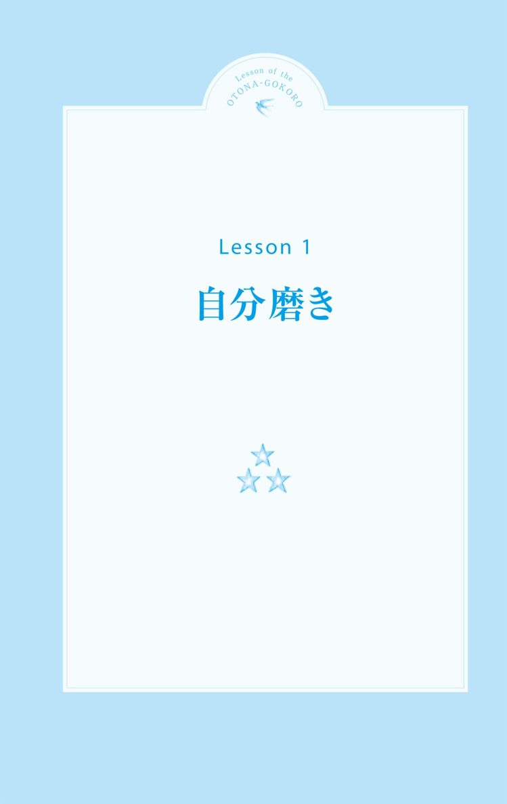
１ 最近メイクのノリが悪くなった気がする
Check!
□実年齢よりも若く見られると、異様にテンションが上がる
□スキンケアにかける金額が１ケタ上がった
□目の下の小ジワ撲滅のために、人知れず努力をしている
絶対老けたくない！
最近メイクが崩れやすくなって、鏡をみるとクマやシワがちらほら。こんな姿は見せられないわと何度もメイク直しをして、つい厚塗りしてしまう。
老けた？ なんて言われたくないし、いつまでも若いねって言われ続けたいの。
年齢を怖がるのはなぜ？
歳とともに身体も変化するのは当然のこと。肌はシミやシワが目立ってきたり、髪のコシがなくなってきたり、肉のつく場所が変わったりと、女性としてはショックなことが多々出てくるもの。
その対策として、アンチエイジングをして活き活きとした姿を保とうとする努力は、女性としてとても大切な心がけです。
けれども、若さがなくなることへの恐怖や、容姿への執着心から、過剰なダイエットやアンチエイジングに走っているのであれば、歳をとることを怖れている自分の心も、きちんとケアをしてあげる必要があります。
心にはアンチエイジングは不要。むしろ心年齢の場合は、実年齢よりも少し上の方が落ち着いて見えるため、魅力が増すものです。
心年齢が実年齢と共に、しっかりと成長している女性は、年齢を重ねた自分をきちんと認めることができるのです。
上手に歳を重ねていくには
まずは、自分がどうして「若さ」に拘り続けているのかを考えてみましょう。
若さは武器だと強く思う心が、いつまでも歳をとらずにいたいという焦りを生み出しているのかもしれません。それは「モテなくなるから」、「相手にされなくなるから」といった、男性受けに対する不安が大きいのでは。
いつまでも若さで勝負するのは無理なこと、「若さ以外に自分には何もない」と思ってしまうのであれば、自分が苦しいだけです。
見た目だけではなく、中身も大切にできるように、夢中になれることや得意なことを見つけておくこと。自分を丁寧に扱って、歳をとるのも悪くはないなと思えるようになっていきたいものです。
また、同性受けする女性になることも、年齢を重ねるのを楽しむ秘訣です。今までは競い合っていたライバルが、これからは同志として長年一緒に笑い合えるようになれたりするのも歳をとってこそ。
恋人や夫は一人ですが、気の置けない女友達は何人いてもいいものです。長い人生を本気で助け合える女友達を見つけて、日々を楽しみましょう。
そして、年齢に拘っているのは自分だけということを心に留めておきましょう。どれだけ老けたとしても、変わらずあなたを好きでいてくれる人がたくさんいることも忘れないでくださいね。
Lesson of the
OTONA-GOKORO
１
オトナ心のご提案
♥若さに拘る理由を考える
どうして若さに拘っているのか、自分が何を不安に思っているのかをきちんと見つめてみませんか？
不必要な理由からの拘りならば、この機会にすっぱりと捨ててしまいましょう。
♥級友に会ってみる
中学校や高校で仲の良かった同い年の友達に、久しぶりに会ってみませんか。
思い出を語り合うことで、歳を重ねる中で得られたものがたくさんあることを、実感できるかも。
２ ショーウィンドウに映った自分の姿に焦りを感じる
Check!
□スッピンで会社に行くことに抵抗がなくなった
□"モテメイク"や"愛されファッション"という言葉に強い拒絶反応が出る
□ヒールを履くことが拷問に等しい
いつの間にこんな姿に？
ふと目をやったショーウィンドウに、疲れ切ったおばさんが映っているなぁと思ったら、もしや私！？ 思わず目を逸らして見なかったことにしようと決める。だって毎日忙しいんだから仕方ないし、どうせもう歳なんだから、若作りするほうがみっともないし。
そんな言葉を自分に言い聞かせながら、どこかで「このままでいいのかな」という不安もよぎる。
この矛盾している気持ちは一体なんなのだろう？
年齢を盾にしていませんか？
「もうおばさんだから」なんて開き直っている人は、自分を卑下することで傷つくことを避けて、努力をしない言い訳を自分で作っているだけです。
老けたなぁ、太ったなぁと、薄々気づいていても、見て見ぬふりをしているのは、現実の自分を認めるのが怖いから。そのうち、どんどん今の自分を認めることができなくなって、コンプレックスの塊になってしまいます。そうならないように、今の自分にあった心身のケアをしていきましょう。
今の自分を知っていますか？
まずは、目を逸らし続けてきた今の自分を、客観的に見つめることから始めましょう。見慣れてくると、ここは悪くないな、ここは変えた方がいいな、と思うところがわかってきます。
特に何をしなくてもボディラインを保てていた若い頃とはもう違います。もう歳だから仕方ないと諦めるのではなくて、年齢に合わせたケアをしていくことが大切なのです。
今まで何もしてこなかった人は、ほんの少し手間をかけてあげるだけでも、すぐに効果が現れるので、やる気もアップするはず。
今の自分を認めることができるようになると、気持ちまで前向きに明るくなっていく人が多いのです。
Lesson of the
OTONA-GOKORO
２
オトナ心のご提案
♥歳の離れた憧れの女性をもつ
こうなれたらいいなと思う、できれば一回り歳の離れた、憧れの人を見つけてみませんか？ 歳をとっても素敵な人は、見た目以上に内面の魅力が溢れているはず。こんな風に歳をとりたいなと思える、自分にとっての理想像を知りましょう。
♥全身のサイズチェックをする
やや怖い気持ちもありますが、一人の部屋で全身のサイズチェックをしてみませんか？ 体重計だけでは気づかなかった自分の体型の変化を客観的に知り、今の自分に無理のないダイエット目標を立てるようにしましょう。
３ 前向きになれない
Check!
□いつも前向きで明るい友達を見ると落ち込む
□ショックなことがあると、立ち直るのに時間がかかる
□自己評価が低いほうだ
なんでもHappyになんて考えられない
急に雨に降られて、慌てて駆け込んだカフェ。あーあ、ついてないなあ、と思っていると、隣の席では「雨のおかげで、素敵なカフェを見つけちゃったね」なんて言っている、かわいらしい女性の姿。
ああ、そうよね、そう考えないといけないのよね、そんなかわいく前向きになれない私って、本当にネガティブで暗いし、だから彼も去っていくのね......、なんてますます落ち込んでしまう。
だけど、なんでもかんでも前向きになんて考えられないですよね。
ポジティブならばいいわけじゃない
ポジティブに物事をとらえようと心がけたり、言葉にすることで、視野が狭くなるのを防いで、気持ちが楽になることはありますが、無理にポジティブに考える必要はありません。落ち込むときは落ち込むし、嫌な気分が続くことは誰にだってあります。
どんなことも、これもいいことなんだと思い込もうとするのがポジティブというわけではないのです。
最初からポジティブばかりを目指していると、現実や、本当の自分の心を置き去りにしかねません。また、無理のあるポジティブさは、周囲の人まで疲れさせてしまうこともあるので要注意です。
無理なポジティブ思考は危険
実際に起きたことを、なんとかいい方向に考えなくてはと拡大解釈したり、事実を都合のいいように解釈してしまうと、現実を客観的に見ることができなくなってしまいます。そうなると、現実と向き合った時に、こんなはずじゃないと現実逃避をしてしまうことにもなるのです。
事実は事実としてきちんと認識することは忘れないでおきましょう。また、本当の感情をきちんと処理する前にふたをする癖がついてしまうのは逆に危険です。
つらい、嫌、逃げたい、疲れた、むなしい、悔しい、しんどい、イラつく、頭にきた、悲しい......。
そんなマイナス感情を無理にポジティブな感情に変換させるのは、自分の感情をねじ曲げる行為。
その結果、ため込んだ感情が後で一気に爆発して、周囲の人に迷惑をかけてしまったり、自分一人で抱えきれなくなった途端に、うつ病になってしまったりと、その代償は計り知れません。根本原因を解決していないので、同じことを繰り返してしまうという可能性も高くなります。
落ち込んだ時はとことん落ち込んでいいのです。
自分の感情をたくさん吐き出して、事実をしっかり受け止め、今後の対策を立てること。
そうしていけば、無理にポジティブになろうとしなくても、ゆっくりと物事がよい方向に進んでいって、自然に前向きな言葉や思考が生まれてくるものなのです。
Lesson of the
OTONA-GOKORO
３
オトナ心のご提案
♥思いきり愚痴を言ってみる
ため込んでいるネガティブな気持ちを一人の部屋で思いっきり声に出してみませんか？ 口にするだけで、気持ちがスッキリして、あまり気にするほどのことでもないなと思えてくるものです。
♥一人で感情を整理してみる
人は感情にとらわれすぎると、目の前のできごとばかりに目がいってしまいます。まずは一人でゆっくり瞑想したり、ノートに感情を書き留めたりして、気持ちの整理をする時間を持ちましょう。
４ 寝ても寝ても疲れがとれない
Check!
□疲れピークでも、気力で乗り切ってしまう
□疲れがたまるとマッサージに行って、お金ですべてを解決してしまう
□休日の午前中は寝て過ごすことが多い
朝からすでにぐったり？
よく寝たはずなのに、会社に着く頃にはもうすでに疲れている毎日。マッサージや温泉に行ったりして、一瞬は楽になるけど、数日後にはもうぐったりしていることも。この身体、一体どうしたらいいの？
疲れてない状態ってどんなだっけ？
慢性疲労の人の特徴として、「元気な自分」がどんな状態なのか、実はよくわかっていないことが多いです。目指す姿がわからなければ、何をしても根本的に解決することはできません。これは身体も心も同じことです。
何をしてもしんどい、そんな日が続いている時は「疲れていない状態ってどんなだっけ？」と思い出してみることから始めてみましょう。
疲れていることが当たり前の状態になっていて、少しでも肩こりや疲れがとれて楽になったら、またすぐに何かにとりかかるような生活をしていませんか？
少しでも余裕ができたら、まだまだ大丈夫、と頑張る習慣が、身体と心についてしまっているのかも。
頑張ることも必要ですが、身体のサインにも気をつけましょう。心は身体を通して危険信号を送ってきます。
たった一つしかない自分の心と身体をキチンと休めて大切に扱う習慣を身につけましょう。
若い頃の生活スタイルのままなのかも？
身体は年齢にそって変化をしていきます。けれども、生活スタイルを昔と変えずに、夜中まで飲んだり、週末も休まず働いたりしていませんか？
以前は一晩眠れば回復していたのに、翌朝になっても疲れが抜けない、二日酔いが当たり前になった、筋肉痛が２日後にやってくる、そんな自分の身体の変化に気づいたら、そろそろ生活を見直す時期になってきたということです。
まずは、今までなんとなく続けてきたり、とりあえず参加したりしていたことの中から、大切なものだけを厳選する作業から始めましょう。
大人になったら大切にしたいセルフケアとは「なんでもたくさん」から「必要なものを丁寧に厳選」していくことなのです。
毎朝、すっきり起きることができないという人は、睡眠の質が悪くなっている恐れがあります。寝る１時間前までには、お風呂に入るなどして身体を温め、身体が眠りにつきやすくするための準備をしてあげることが大事です。
ベッドに横になり身体を休めているつもりでも、テレビやネットの情報に触れ続けていると、心身ともに本当に休んでいることにはなりません。
特に寝る直前のパソコンやスマホの光刺激は、睡眠の質を著しく低下させてしまいます。
寝る前と休日には、意識して携帯の電源をOFFにして、なにも見聞きしない時間を作るように心がけましょう。
Lesson of the
OTONA-GOKORO
４
オトナ心のご提案
♥元気な自分を図解化しておく
どんな状態だと調子がいいのかを目に見える形で残しておきませんか？
身体や心のベストな時を知っておくことで、調子が悪いなと思ったら早めにケアができるようになります。
♥枕を変えてみる
今の自分の身体にあった枕に変えてみませんか？ 身体に合っていない枕が、安眠の邪魔をしている可能性があります。
一日の４分の１を過ごす場所。少しお金をかけてでも、寝心地のよい最高の環境に整えてあげることが大事です。
５ やけ食いをしてしまう
Check!
□ダイエットは何度かチャレンジしたけれども、すぐに挫折
□いつも心が満たされない
□キレイになりたいけど、頑張る気力が湧かない
どうしても食べるのをやめられない！
うまくいかなくてイライラした日の帰り道は、ついケーキやご飯のやけ食い。
食べている時は少し元気になるんだけど、食べ終わってから、大きな後悔とパンパンのお腹で、身も心もずっしり......。
そんなことを頻繁に繰り返していませんか？
やけ食い自体が悪いわけではない
仕事で嫌なことがあって怒りが収まらない時や、彼に振られて悲しい時に、もうイヤ！ と、やけ食いに走ってしまうことは、誰もが経験すること。
やけ食いによるストレス解消は、手軽にできて誰にも迷惑をかけない方法なので、自分の身体に負担がかからなければ、悪いことではありません。
周りにずっと愚痴を言い続けたり、自分の中にマイナスの感情をため込んでしまうよりは、ずっと前向きなストレス解消法でもあるので、これは割り切ってしまいましょう。
ただし、やけ食いをした後にいつも落ち込んだり、自己嫌悪に陥るのであれば、やけ食いのアフターケアをすることが大切です。
また、やけ食いの原因が自分でわかっているのであればいいのですが、よくわからないまま頻繁に食べ続けているのであれば、何が根本原因なのかを見直してみましょう。
やけ食いは、後が肝心
やけ食いの後に付きまとう後悔とは、「こんなに食べたら太ってしまう」という焦り。１回や２回のやけ食いで、すぐに太ることはありませんが、もし気になるようであれば、食べた分を解消する行動もセットにしてしまえばいいのです。
例えば、やけ食いした日はウォーキングをするとか、半身浴をする、翌日の朝食は控えめにするなどです。一駅歩いて通勤するといった「やけ食いセット」なるものを、事前に準備しておくのです。
そうすれば、食べ過ぎたことへの後悔も減り、他のストレス解消法も一緒に行うことができるので、やけ食い以外の発散方法を見つけることができるかもしれません。
また、食べたものを記録しておくのもオススメです。何をどれだけ食べたか、自分がいつ、なぜ、やけ食いをしたかを知ることで、いつも陥りやすいストレスパターンに気づくきっかけにもなるのです。
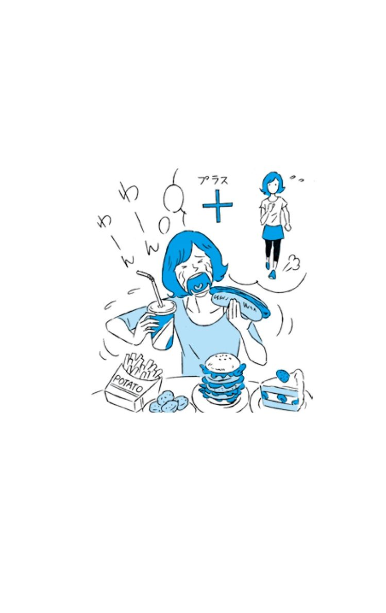
Lesson of the
OTONA-GOKORO
５
オトナ心のご提案
♥食べる前に写真を撮る
食べる前に何をどれくらい食べるか、写真を撮っておきませんか？
いつ頃やけ食いしやすいか自己管理できるとともに、よくあるストレス原因にも気づけるので、根本的に解決することにつながります。
♥高級なデザートに変える
簡単に買えるスナック菓子ではなく、普段はなかなか手の出ない高級なデザートに変えてみませんか？
心を満たす時間と考えて、贅沢なやけ食いにしてしまいましょう。
６ 楽な方に流されてしまう
Check!
□テスト前は一夜漬け派だった
□今が楽しいかどうかが重要だと思う
□コツコツやる地道な作業が苦手
頑張ろうとは思うけど続かない
将来のために勉強をしたり、最近ゆるんできた体を引き締めるために運動でもしようかなとは思っているんだけど、今日もだらだらテレビを見たり、ムダにネットをしたりしていたら、一日が終わっちゃった。
やらなくちゃとはわかっているのに、楽な方を選んでしまうのは、一体どうしてなのでしょう？
短期集中タイプの落とし穴
まあ何とかなるだろうと、どこか楽天的に考えるタイプの人は、目先の楽しいことを選びがちです。
元々要領がよくて、学生の頃からテスト直前に勉強をすれば、それなりに点がとれた、ダイエットも３日間で一気に痩せた、といった経験がある人は、いざとなれば何とかなるだろうと心のどこかで思ってしまうのです。
もちろん楽天的に考えることは悪いことではなく、実際に一気に挽回できることだってあるでしょう。
しかし、過去の自分とは決定的に大きな違いが２つあることに気づかなくてはなりません。
１つ目は、昔と今とでは自分自身の状況が違うということ。１つのことだけに集中できる余裕があった昔とは違い、役割もやることも増えた今では、一気に挽回できるだけの時間の確保がなかなかできません。
一夜漬けをして翌日の仕事への支障が出るわけにもいかないなど、生活サイクルが大きく変わってきている今は、以前のような短期集中型で結果を出すことが難しくなっているのです。
２つ目は、やるべきことに高いレベルの能力を要求されるものが増えてくるため、一人では完結しないことが多くなっているということ。自分だけでなんとかできるはず、と慢心するのは危険なのです。
予測が甘いままで楽な方を選んでいると、直前になって「こんなはずじゃないのに」と、後悔しても遅く、大事な場面で信用を失いかねません。
やろうと思えばできる実力があるはずです。今までは直前にやろうとしていたことを計画を立てて早めに取りかかり、段取りのヨミを少し厳しめに設定するように気をつければ、成果も信用も上がります。
少し未来の自分を想像しよう
１年前と比べて特に成長していないなと感じたり、このまま歳をとっても大丈夫だろうか？ と不安に思うのであれば、それは、そろそろ未来の自分のことも考えようと向上心が生まれてきたサイン。未来の自分のために、時間や努力を投資することを考えてみましょう。
まずは、３年後、５年後の自分はどうなっていたいだろうと考えてみること。
「結婚をしていたい」、「独立していたい」と、なりたい姿が本当はたくさんあるのに、「どうせ無理だから」、「夢なだけだから」と、楽な方に流されてきたのならば、そんな自分からはそろそろ卒業しましょう。
あの時もっと頑張っていればよかったと、後悔しないためにも、少しきつめな道を選んでみること。登るのは多少つらくても、その先で得られることは、自分にとって、とても価値があるのです。
楽をして手に入れたものを、人はあまり大切にしません。お金をコツコツ貯めてやっと買えたコートは、少しの汚れでもすぐにしみ抜きをするけれど、これでいいかと気楽に買った服は汚れても気にせず、適当に脱ぎ散らかしてしまいます。
人は時間をかけ、苦労して手に入れたものには、価値を感じて大切にするのです。
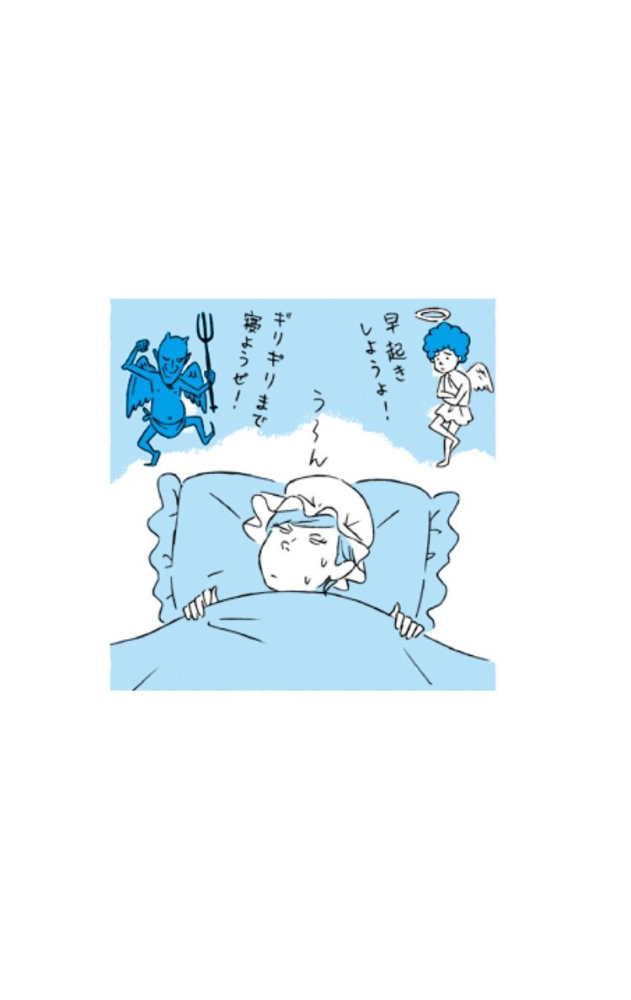
Lesson of the
OTONA-GOKORO
６
オトナ心のご提案
♥周りに宣言する
資格をとる、ダイエットをする、1年後はこうなってみせる、という目標を周りに宣言してみませんか。言い出した手前、中途半端では終わらせられないというプレッシャーが、あなたをひと回り成長させてくれます。
♥休みの日こそ早起きをする
つい寝過ごしてしまう休日こそ、早起きをして一日を有効に使ってみませんか。
早起きは三文の得、休日のゆったりとした時間の中で、ずっとやろうと思っていたことにも挑戦できる、いいチャンスです。
７ 失敗を引きずってしまう
Check!
□ストレスを溜め込むタイプだ
□他人から尊敬される人でありたい
□上手くいかないときは、自分を責めてしまう
またダメだった・・・
一度失敗すると、なかなか復活できなくて、ずっとへこんだまま過ごしてしまう。
終わったことは気にするなとか、今度頑張ればいいじゃないかとか、周りは言ってくれるけど、そんな簡単に気持ちの切り替えができないという人がほとんどではないでしょうか。
いつも失敗を引きずってしまう
くよくよしている時「私はいつもダメだ」と思って、自分を否定してしまっているかもしれませんが、失敗するのはあなただけではありません。
ことの大小に差があっても、人は毎日のように何かに失敗しているものです。
メイクがうまくいかなかった、駅を間違えて降りてしまった、ゴミを出し忘れた、試験に落ちたなど、あげたらキリがないものです。
けれど、それらをすべて引きずっているわけではないはず。
いつまでも気持ちを切り替えられないのは、どうしても成功させたいとか、これだけは間違えたくない、絶対失敗したくないという思いが特に強かったからではないでしょうか。
自分にとってとても重要だったために、残念な結果を受け止めるのに時間がかかっているだけなのです。
結果ばかりにとらわれずに、まずは失敗原因ときちんと向き合い、自分が成長するための踏み台にしましょう。
そうすれば、今からできることはないだろうか、次回はどうしたらうまくいくだろうかと、今後の対処法を考えようとする心も生まれてくるはずです。
失敗するはずないと思っていたのに・・・
成功すると思っていたことがダメだった場合も、なかなか立ち直ることができないものです。
「もっとちゃんと準備していればうまくいったのに」と、成功の可能性が高かった分、後悔し続けてしまうからです。
大丈夫だろうと高を括って、手を抜いていた自分に気づいたのなら、次からは最後まで油断しないようにしましょう。
または、そもそもの可能性の読みが甘かったのかもしれません。できそうだな、簡単そうだなと油断してしまう時こそ、厳しめに見積もるようにしましょう。
あと少しでクリアできることだったのであれば、次は最後まで気を抜かずに丁寧にやれば成功するはずです。悔しさを大きなバネにしましょう。
Lesson of the
OTONA-GOKORO
７
オトナ心のご提案
♥次回の計画を立てる
失敗は成功のもと。悔しさをバネに、次回に向けて万全な準備をしましょう。余裕をもったスケジュールで、前回と同じ失敗が二度と起こらないように、自分の弱点をきちんと見極めた上での計画を立てること。
♥失敗を活かす
自分が失敗した原因を分析して、忘れないようにしっかりメモに残しておきましょう。
そして、いずれ自分が教える立場になった時に同じミスが起きないように伝えてあげるなど、別のことに活かす方法がないかを考えてみましょう。
８ 空回りしている気がする
Check!
□努力は他人の何倍もしている
□自分の能力にはそれなりに自信がある
□正論だと思うと、つい強く主張してしまいがち
一生懸命やっているのに・・・
朝も人より早く出勤して、机を拭いたり気配りしたりしながらも、自分の仕事はもちろんしっかりとこなしている。仕事のスキルにだって自信がある。
だけど、なんとなく周りがついてこないというか、距離を置かれているような気がするのは気のせい？
思い通りにしようとしているのかも？
いつも一人でどんどん決断して仕事を進めていく人は、確かに処理能力が高くて、自分のやり方にも自信があるのでしょう。その反面、自分の考えや方法が一番正しいのだと、周りの意見を聞かなかったり、人に任せたりしないため、一人浮いてしまっているのではないでしょうか？
周りの人からすれば、この人は、私たちのことを「頼りにならない」と考えているんだな、そんなに優秀ならば一人でやれば！ と反感をかっている可能性があります。これは、有能な人が管理職になった時に、よく起こりがちなことでもあります。
人に相談をしているようでも、最初から自分で結論をもっていて、そちらの方向に話が進むようにしてしまっているのかもしれません。話がまとまったと思っているのは自分だけで、実はいつも相手が折れて譲歩してくれているのかもしれませんよ。
もし、自己主張を強くしがちなのだとしたら、違う視点を受け入れることも心がけましょう。
人の意見も取り入れることに対して、抵抗しすぎないのも大人女性には大切なのです。
理屈だけで人は動かない
たとえ正論であっても、それを言う人のことが好きでなければ、行動しようとは誰も思いません。何を言うかではなく、誰が言うかが重要なのです。
たとえ難題だとしても、信頼している人の頼みならばと腕まくりをしてとりかかるように、人は理屈よりも感情で行動するものです。
もしかすると、「他人の感情」への配慮が不足しているために、周りがついて来ないのかもしれません。
他人の目を気にしすぎる必要はありませんが、普段の自分がどんな風に見えているのかを、冷静に見つめ直してみましょう。自分が何か言ったとき、周りの反応がどうであったかをよく観察して、自分の行動を振り返ってみること。
自分を客観視できる力をもつことも重要なのです。
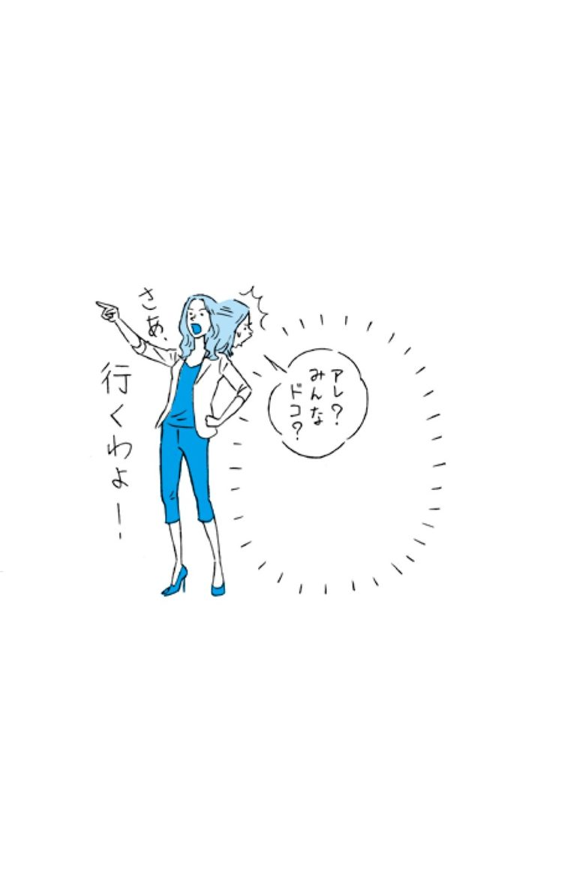
Lesson of the
OTONA-GOKORO
８
オトナ心のご提案
♥自分の口癖を調べる
普段、無意識に使っている言葉は何かを確認してみましょう。
相手の言ったことに対して、「でも」と否定で受けるのが口癖になってしまっている場合は、特に注意が必要です。
♥ときどき鏡を見る
真剣な顔をしている時の自分の顔を見てみるのはいかがですか？
夢中になっているとき、眉間にシワが寄って、話しかけづらい雰囲気を出してしまっていることが多いもの。
場の雰囲気づくりにも気を遣えるのが大人のマナーです。
９ 自分らしさがわからない
Check!
□単調な毎日にウンザリしている
□幸せだとは言い切れないけど不幸でもない
□人の意見に流されやすい
柔軟な対応ができることも必要だけど・・・
大人になり関わる人が増えれば増えるほど、人は多くの役割をもつようになります。
上司に対してはしっかり者の部下になり、後輩にとっては頼れる先輩、友達といると明るいムードメーカーになるけれど、彼といるときは甘えたがりになる、というように、そのときの役割ごとに変化できる対応力があるのはとてもいいことなのですが......。
相手に合わせ過ぎると、ときに自分を見失ってしまうこともあるので注意が必要です。
誰からもよく思われたい？
皆から好かれたい、嫌われたくないという想いが強過ぎると、自分を少しでもよく見せようとするあまり、本心が言えずにストレスを抱え込んでしまうことも。
性格も価値観も多様化している今の世の中で、すべての人に好かれることなんて不可能です。相手に合わせ過ぎて自分がわからなくなってしまうのであれば「好き嫌いは相手が決めるもの」 「人の気持ちはコントロールできるものではない」と覚悟をもつことも大切です。
「好かれる人」より「信頼される人」へ
相手によって態度を変え過ぎていると、調子がいい八方美人と周囲から思われて、気づかないうちに信頼を失ってしまうことにもなりかねません。
信頼を得るのにはとても時間がかかりますが、失うのはほんの一瞬。そして、一度信用を失うと回復するのがとても大変なのです。
だからこそ「信頼される人」になることの方が、「好かれる人」になるよりも、はるかに難しく、より重要です。
長い付き合いの増える大人女性として、これからは、その時々に「好かれる人」を目指すのではなく「信頼される人」を目指していきませんか。
信頼される人とは？
一言でいうと、「ぶれない人」です。
言うことが一貫していて、相手によって中身を変えない芯の強さがありながらも、柔軟な対応もできるしなやかさも併せ持った人のことです。
自分らしさとはこの「芯」に当たるもの。
なかなか難しいことですが、次のことを意識するだけでも日々の行動に変化が現れます。
目の前のことや、ことの枝葉にばかり目をとらわれすぎずに、常に全体像や少し先の未来を見るようにすること。そして関わる人とは目的や目標を常に共有するようにしましょう。
そうすると、言っていることが相手の立場でころころ変わったり、その時の思いつきで行動したりすることが減っていきます。
それが他人からの信頼につながり、自分らしさも見つかるようになるのです。
Lesson of the
OTONA-GOKORO
９
オトナ心のご提案
♥座右の銘をもつ
迷ったときはこれを大切にしようという言葉を持ちませんか？
自分で考えた言葉でも、ことわざでも、これがしっくりくるなという言葉を見つけてみましょう。
♥未来予想図を作る
恋人や家族と、これからどうなりたいのかを話し合ってみませんか？
一緒に目指す方向をしっかりと確認しておけば、将来、自分がどうなっていたいのかをより明確にイメージできるようになり、変化するきっかけになるのです。
10 自分に自信がもてない
Check!
□人には言えないコンプレックスがある
□周囲の人は自分よりも優れているように思う
□自分は価値のない人間だと思う時がある
いつも緊張してばかり
仕事を任された時、人前で発表する時、知らない人と話す時。失敗したらどうしようと思うと、不安でとても緊張してしまって、ますますうまくいかなくなってしまう。
いつも堂々としている人が羨ましいな、どうしたらあんな風になれるんだろう。
評価を気にしすぎないこと
失敗したら呆れられるのではないか、頼りにならない人と思われるのではないか、笑われたら恥ずかしいと、周りからの評価を気にしている時は、誰でも自信をなくしてしまうもの。よく思われたい、高く評価されたいと強く思い過ぎて、自分にプレッシャーになってしまうからです。
そんな時は、「成功しよう」ではなく、「その場を楽しもう」と考えたり、「よく思われよう」よりも「やるべきことを全うしよう」と、目標を切り替えてみましょう。
また、不安を感じるのは準備不足のサインと考えて、より入念に下準備をしておくと、ここまでやったんだから大丈夫と自信がもてるようになります。
「次の手を考えておく」というのも、失敗を過度に恐れないためには有効。人目を気にしない自信をもつために、できる限り現実的な準備をすることをオススメします。
経験が自信を作る
子供の頃、初めて自転車に乗れた日のことを覚えていますか？ 何度も転んで泣きながら練習していたら、急に一人で乗れるようになって、それからは特に意識しなくてもスイスイ走れるようになったはず。
もしも今、公園でサイクリングするのが久しぶりだとしても、それほど抵抗なく乗ることができると思います。これは「経験からくる自信」です。
何度も練習してできるようになったことや、何度も成功したこと、一度経験したことは、あまり躊躇することなく取り組むことができるのです。できて当たり前と、特に気にも留めていないようなことが、実は「自信」にあたります。
反対に、経験したことがないことは、できないと思ってしまって不安が先に立ち、自信がもてません。
自信をつけるための一番確実な方法は、一度経験をしてみること。自分でやってみることで、次からは抵抗がなくなります。
最初の一回は失敗して当然くらいに考えて、積極的にチャレンジしてみましょう。すぐにはいい結果が出ないものといい意味で開き直って、諦めずにしばらく続けてみること。近い場面を想定して模擬体験をするだけでも効果があります。
自信のなさを強いバネにして、思い切りジャンプしてみましょう。
Lesson of the
OTONA-GOKORO
10
オトナ心のご提案
♥知らないことは聞いてみる
わからなくて不安になっていることがあったら、知っている人に聞いてみませんか。
知らないことがあって人に聞くのは、決して恥ずかしいことではないのです。
♥自分の姿を撮影してみる
人前で発表する場面に、どんな表情や声のトーンで話しているのか、動画で撮影してみませんか。
自分がイメージしている姿や声は、実際とは違うもの。意外とできていることがわかったり、直したい癖に気づくことができたりします。
11 誰からも必要とされていないような気持ちになる
Check!
□異性からの優しい言葉に心が揺れる
□実家の両親とは疎遠気味
□彼氏と別れたばかりか、しばらく付き合っている人がいない
いつも一人ぼっちな気がする
特に何を言われたとか、仲間外れにされたなんてことはないけれども、誰かと一緒にいても孤独を感じてしまうのはどうしてなのでしょう。
いつも誰かとつながっていたい？
常に仲間と連絡をとり合っていたり、飲み会に誘われているのが、人から必要とされていることだと思い込んでいませんか。
SNSなどの情報ツールが誕生したことによって、人と人とのつながりが見えるようになった今、新たなストレスが生じるようになりました。親しいと思っていたはずの人から、自分だけが集まりに呼ばれなかったら、誰でも落ち込みますし、自分はいらない存在なんじゃないかと不安になったりもするでしょう。
ツールは便利なものですが、それに依存しすぎてしまうと現実での自分の価値を見失ってしまいます。
本当に仲のいい人とは、頻繁に連絡を取り合わなくても、お互いにわかり合える関係をいいます。
ツールでの人間関係には、執着しすぎないことが大切なのです。
身近な人にこそ言葉で伝えること
本当に必要な人や大切に思う人には、言葉に出して感謝を伝えるようにしましょう。
寂しさを感じた時は、「いることが当たり前」になっている家族や友達のことを思い出してみませんか。本当に必要な人は身近なところにいるものです。そういう大切な人たちと会って話す機会を作るようにしましょう。ありのままの自分を受け入れてくれる人がいると、心が安定します。
安心して素のままで話ができる人と過ごすことも、セルフコントロールには重要なのです。
Lesson of the
OTONA-GOKORO
11
オトナ心のご提案
♥自分を大切にする
毎日頑張っている自分を褒めてあげましょう。身体が疲れている場合は、エステ、マッサージなどでメンテナンスしてあげることも大事です。自分を丁寧に扱ってあげることが、心の安定にもつながります。
♥家族と連絡をとってみる
たまには家族に会いに行ったり、電話をして話したりしてみましょう。
大切なことは、自分らしくいられる人と一緒にいる時間をもつこと。何も予定のない週末には、大切な人とのんびり過ごしてみてはいかがでしょうか。
12 何をしても長続きしない
Check!
□流行りモノには目がない
□我慢するのが苦手
□考えるよりも先に行動してしまう
いつも三日坊主になってしまう・・・
資格をとろう！ ダイエットをしよう！ と始めてみても、どれも途中でやめてしまい、真っ白なテキストや道具が部屋に山積みになっている。
最初は張り切って始めたはずなのに、いつも三日坊主になってしまうのはどうしてなのでしょうか？
それって今、本当に必要なこと？
最初はどんなにやる気があったとしても、続けることのメリットを具体的にイメージできていないと「こんなことを続けて一体何になるのだろう」と疑問をもってしまい、途中で断念してしまいます。
もともと人は新しいことを始めたり、慣れた生活を変えようとすることがとても苦手です。環境の変化によって、最初は強い抵抗が生まれるからです。
これを乗り越えるためには、明確なメリットをイメージすることが大事です。また、スモールステップを繰り返して、達成感を味わうようにすると長続きします。今まで手あたり次第に手を出して、途中で投げ出してしまうことが多かった人は、まずは最初の選択から見直しましょう。
いきなり高い目標設定をしない
いきなり難関資格を目指したり、－１０キロを目指してダイエットをスタートしたりと、高い目標を設定すると、すぐに挫折してしまいます。
長く続けるためには、達成できたという快感をこまめに感じることが必要だからです。
長続きしないという自覚があるなら、最初は1日や半日といった短期間の体験会を受講してみる、1日数分のトレーニングを３日間だけ続けてみるなど、ハードルを下げることから始めましょう。自分が設定した目標を成し遂げたことで得られる快感が、継続心を生み出します。
これが、新しいことを習慣として身につけるための一番確実な方法なのです。
Lesson of the
OTONA-GOKORO
12
オトナ心のご提案
♥スケジュールを立ててみる
長く続けるコツは、目先の楽しさよりも、先々の自分がどうなっていたいかを想像して、ワクワクすること。１日ごと、１週間ごと、１ヵ月ごとなど、短期スパンでの目標を書いてみて、それを達成する喜びを味わってみるといいでしょう。
♥個別レッスンを受ける
個別レッスンを受けるなど、何かを始める時は、最初にマンツーマンで指導を受けてみませんか？
一気に効果を出したり、達成感を感じることもできますし、金額が高い分、元をとらなくてはと集中することもできます。
13 週末に予定がないと、なんだか不安
Check!
□SNSに投稿した記事のいいね数がいつも気になる
□自分だけ呼ばれない飲み会があると凹む
□何も予定がない休日は、スッピンにパジャマで家から一歩も出ない
何もすることがない自分が許せない？
朝活にランチ会、おけいこ事にと毎日忙しいのが当たり前で、一日も空白なんて作りたくない。
一見すると充実しているように見えますが、スケジュール帳の空白が嫌で、常に予定を入れているのなら、決して充実しているとは言えないもの。
ギュウギュウ詰めの日々を送り続けることのデメリットを知った上で、自分にとって心地よい過ごし方を考えてみましょう。
ゆとりはチャンスを生み出す
スケジュールが空いているとすぐに予定を入れてしまう習慣を続けているうちに、本当はあまり興味のないイベントにまで参加していた、ということはありませんか。
まず、大前提として、予定が詰まっていることと充実していることはイコールではないことを知りましょう。
いつ誘っても空いていない人なんだなと思われると、誘っても無駄だろうと判断されて、気づいたら誰からもお誘いが来なくなってた、なんていうことにもなりかねません。
後から本当に行きたいイベントが出てきても行くことができないばかりか、先約をキャンセルした場合は、信用を失うリスクまであるのです。
本当に充実していて多忙な人ほど、周囲に「忙しい」とは言わないもの。
忙しいが口癖になってしまっている人は、気づかないうちに自分から壁を作ってしまっているのです。
他人に自慢できそうなことを選んでいない？
週末も充実している人だと思われたいという見栄から、予定を埋めようとしていませんか。
この場合は、人に羨ましがられることが選ぶ基準になっているので、自分がしたいことよりも他人に自慢できそうなことを選んでいます。そのため、自分がやりたいと思っていることではないこともしばしば。
参加しても、SNS にアップした写真の反応が気になって常にチェック。結局、その場自体を楽しんでいない状態になってしまいます。
週末に誰が何をしているかなんて、周囲の人はあまり気にしていません。その場その瞬間を楽しめることこそが、充実した時間を過ごすと言えるのです。
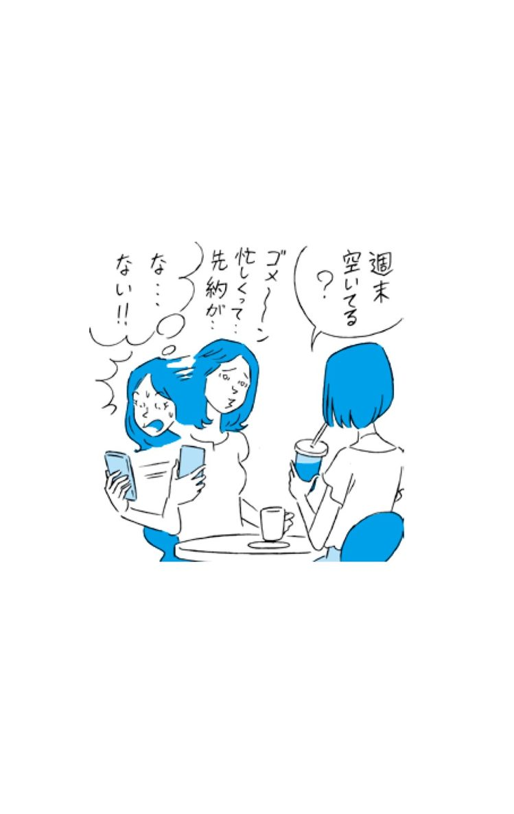
Lesson of the
OTONA-GOKORO
13
オトナ心のご提案
♥本当にやりたいことをリストアップする
今、自分が本当にやってみたいことは何かを、リストアップしてみませんか？ 本当はどんな週末を過ごしたいのかに気づき、自分らしい週末の過ごし方が見えてきます。
♥参加したイベントでは役割をもつ
自分も役割をもつことで、そのイベントを盛り上げる側に回ってみませんか？
誰かが盛り上げてくれるのを待つのではなく、自分から積極的に参加することで、その場を充実した時間にしてしまいましょう。
14 いつも時間に追われて心に余裕がない
Check!
□先を見越して計画を立てるのが苦手
□つい、予定を先延ばしにしてしまう
□ギリギリにならないとやる気が起きない
なんで毎日こんなに忙しいの？
自分の仕事だけでも手が回らないのに、上司からも用事を頼まれるし、新人にも気を配らないといけないし。おまけに家事も山積み。メール返信もしなきゃいけない。ネイルが剥げているのを見ると泣けてくる。どうしたら時間がコントロールできるようになるの？
働く女性は、やることがたくさん。ひとつ終えてもまた次の仕事がやってきて、いつまでたってもやるべきことがなくなりません。それをすべて抱え込んでいては、どんどん自分がすり減って、たまり込んだ疲れが一気に爆発してしまう危険性もあります。では、どうしたら心に余裕をもつことができるのでしょうか。
人に任せる力を身につける
頑張りすぎる女性ほど、何でも自分がやらなくちゃいけないと一人で抱え込みすぎてしまって、人に頼むことが苦手です。
だって、私じゃないとできないことだし、頼むくらいなら自分でやったほうが早いからと、なんでも一人でやろうとしていませんか？
確かに教える手間もかかって、ますます自分の時間がなくなるように感じますが、それは最初だけのこと。何よりもその仕事を任された人にとっては、頼りにされるのはとても嬉しいものなのです。
人を頼ることで、いい関係と充実した時間を生み出すことができます。
自分しかできないという思い込みをまずは捨て、そして人を信じること。
あなたにお願いしたいと、信頼と期待をきちんと伝えて、分け合う力を身につけましょう。そして、一度任せたことは、多少ハラハラしたとしても口を出さずに見守りましょう。失敗しそうな時だけ、そっとフォローを入れるだけで充分なのです。
時間ではなく心に余裕がないだけかも
いろいろな役割をもつ女性にとって、時間は確かに足りないもの。けれど本当は時間ではなく、自分の心に追われているのではないでしょうか。
「忙」という字は、「心を亡くす」と書きます。心を亡くさないためにも、遊び心をもつことを忘れないこと。
すべてが終わることはないのだと、途中でも一区切りして少しは休んでもいいのだと、自分を許してあげましょう。
そうすれば、イライラしてミスをすることや周囲とのトラブルも減り、結果として時間の短縮にもつながります。
忙しい時ほど、少しでも自分の心を取り戻す時間をもつほうが、物事はスムーズに進むのだと心にとめておきましょう。
Lesson of the
OTONA-GOKORO
14
オトナ心のご提案
♥得意な人を見つけておく
自分が苦手なことを、得意とする人は必ずいます。いざという時に得意な人に頼むことができることも大人女性のチカラ。得意なことを訊かれたり頼まれたりすると嬉しい人は多いものです。
普段から、人の長所や得意なことを発見するのを楽しみにしてみませんか？
♥ＳＮＳをログオフする
常にログインしているツールは、今、必要なもの以外、ログオフすることを心がけてみませんか？
必要な情報だけに触れるということも心の余裕には必要です。必要な時だけログインするようにしましょう。
15 友達といても孤独を感じてしまう
Check!
□遊びの誘いを断れずに、惰性で参加してしまう
□飲み会に呼ばれないとショックなくせに、一人の時間ができるとホッとする
□サシで飲めるぐらい仲のいい友人がいない
友達といるのに寂しいのはなぜ？
友達とのランチに同僚とのワインパーティ、週末はバーベキュー大会と、スケジュール帳はいつもイベントでいっぱい。
だけど、楽しいはずの時間なのにどこかで早く終わらないかなと思っている自分がいる。
周りは盛り上がっているのを見ると、ますます惨めな気持ちにもなって、居心地が悪いと感じるのは一体どうしてなんだろう。
一緒にいるのに寂しさを感じる自分に気づいているのなら、そろそろ無理をするのをやめてみませんか？
一緒にいないと仲間外れになる？
どんなイベントにも参加しなくてはと思ってしまう女心には、その場にいないと、話についていけなくなるかもしれないという隠れた不安があります。
毎日、内緒話をすることで結束力を強めていた学生の頃の癖が抜けていなくて、参加しなくちゃと心のどこかで思っていませんか。
けれど、そんな心境では、一緒にいてもどこか虚しくて、寂しくなるのも当然。その場にいても、話の輪に入れないと、やっぱり自分だけが一人でいるような気持ちになってしまうからです。
本当にお互いにとって必要な人ならば、何年会わなくても、再会すれば昨日も一緒にいたように会話も気持ちも弾むもの。会わないことを怖がらなくても大丈夫なのです。もし一度断ったら、二度とお誘いが来ないような関係ならば、それまでの仲だったんだなと思う勇気をもつことも大人女性には必要です。
自分だけチャンスを逃してしまった？
「こないだの飲み会来ればよかったのに！ いい人がいたんだよ！」なんて言われて、やっぱり行けばよかった、と後悔した経験はありませんか。
その場にいないと、自分だけがチャンスを逃してしまうかもしれないという焦りから、無理をしているのかもしれません。自分が参加した時は、来なかった人に「この前はすごく楽しかったよ」なんて、話していることはないでしょうか。それは参加者の世間話に近いことがほとんどなので、気にすることはありません。
例え本当にいい出会いやできごとがあったとしても、心から楽しんでいない時には気づかないもの。
本当に行きたいと思って参加した時は、特別なことがなくても嬉しいことがたくさんあるはずです。
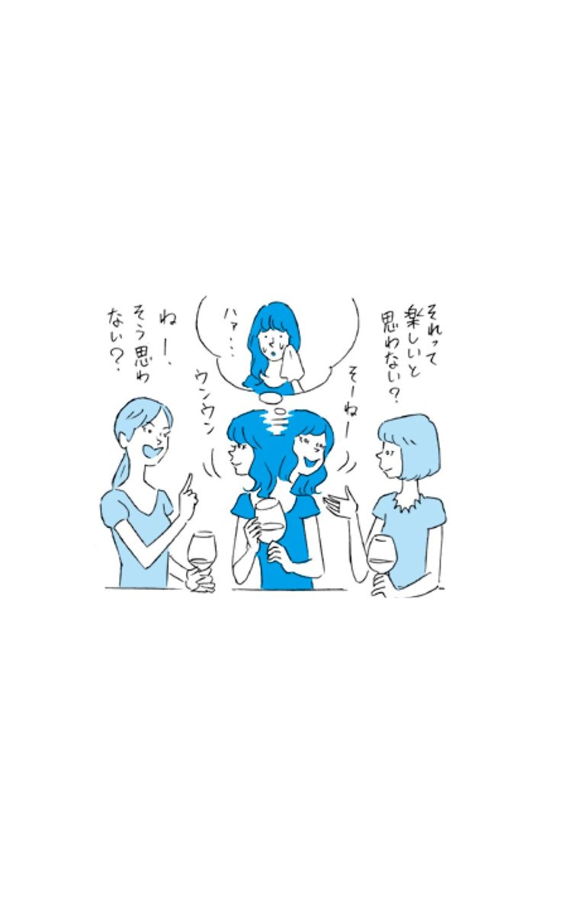
Lesson of the
OTONA-GOKORO
15
オトナ心のご提案
♥会いたい人に会いに行く
本当に会いたいと思う人とは意外と連絡をとっていないもの。地元の友達や中学時代の恩師など、本当に会いたい人に自分から会いに行ってみては？
♥休む曜日をつくる
不規則にいつでも予定を入れていると体調も崩しやすく、仕事にも支障が出てしまいます。疲れがたまりがちな曜日は、一人で過ごす日と決めてみては？
16 仕事とプライベートのバランスがうまくとれない
Check!
□仕事の予定を優先しがち
□気づけば休日も仕事のことばかり考えている
□完璧主義者である
バランスってどうやったらとれるの？
仕事もプライベートもしっかりとこなして、活き活きとしている人もいるのに、私はどっちも中途半端。
こんな不器用な私には、もともと両立なんて無理なのかもしれないし、思い切ってどちらか捨ててしまおうかなと悩んでしまう。
働く女性にとって、仕事もプライベートも大切な要素。どのようにバランスをとればいいのでしょうか。
整理することから始めてみよう
何もかもを手放さずに、バランスをとろうとするのは難しいものです。まずは、今の生活に必要のないものを、手放すことから始めてみませんか。
職場では責任のある仕事が増える一方、趣味や恋愛、結婚や出産など、大人女性はどんどんやることが増えていきます。
そんな手一杯な状態では、バランスをとろうとしても、重くて持ち上げることすらできなくなるもの。
まずは今の生活に本当に必要なことを厳選し、そうでないものは、思い切って手放してしまいましょう。今までなんとなく続けてきたことを止めるだけでも、時間も心の余裕もぐっと増えるものです。
うまくバランスがとれなくなったなと感じたら、抱えているものを見直す時期なのです。
完璧主義をやめる
５：５のように同じ割合が、一番バランスがいいように思いがちですが、その時の状況によっては、９：１になったり、３：７になったりと、常にその比は変化してもいいのです。
新入社員のうちは仕事が９割だったけれど、結婚後はプライベートが７割になったりと、その時々に合わせて比率を変えることできる柔軟さを大人女性はもてるといいですね。
そのためには完璧主義をやめること。全部一人でやり遂げようとするのではなく、時には周囲に助けを求めたり、時間の短縮に便利なものを利用しましょう。
また、スケジュール管理をしっかりすることも、バランスがとれる女性になるためには必要不可欠です。ポイントは、仕事とプライベートを分けずに管理すること。両方を見比べながら予定を立てることで、その時に適した比率を把握することもできますし、どちらかの予定を忘れたりすることもなくなります。
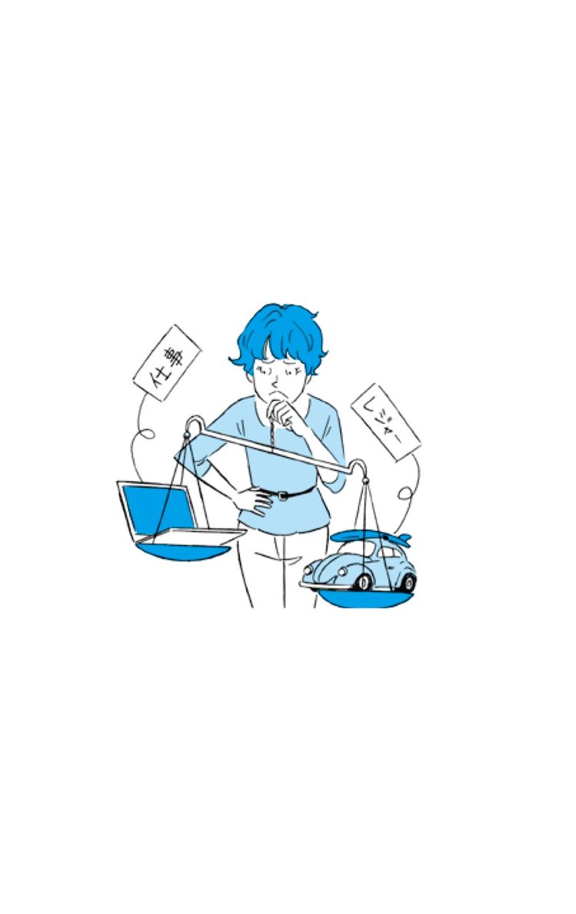
Lesson of the
OTONA-GOKORO
16
オトナ心のご提案
♥優先順位を考える
今の自分にとって、必要なこと、大切なことは何か、優先順位をつけてみませんか？
優先順位が低いものは、しばらくどこかにしまっておき、定期的に今は何をやるべき時かを見直すようにしましょう。
♥バッグをひとつにしてみる
仕事とプライベートと両方に使えるバッグにしてみるのはいかがですか？
バッグインバッグなどを上手に活用すれば、その都度入れ替えたりすることもなく、忘れ物や時間のロスも防げます。
17 今の仕事を続けていていいのか悩む
Check!
□活き活きと働く女友達に会うと嫉妬する
□職場に尊敬できる女性の先輩がいない
□自分の居場所はここではないと思う
そろそろキャリアアップ？
今の仕事にすごく不満があるわけではないけれど、もっと自分の力を活かせる場所や、やりがいのあることがあるんじゃないのかなと考え始めた。
そんな時は一旦立ち止まって、今とこれからを冷静に見つめてみましょう。
キャリアアップに必要なこと
収入が上がったり、昇格したり、転職することがキャリアアップとは限りません。
キャリアアップとは、「なりたい自分」に近づくために、「今の自分」に必要なこと、不足していることを積み上げていくことです。
もう歳なんだから夢見てばかりじゃいけない、なんてことはありません。「今の自分」とのギャップをしっかりと見つめ、それを補う経験や知識などを積み上げることができればいいのです。
ただし、「なりたい自分」と「今の自分」との間には必ず大きなギャップがあります。そのギャップを埋めるには何を積み上げていけばいいかを、現実的に考えることが必要です。
もし、到底そのギャップを埋めることができないと思うのであれば、「なりたい自分」を見直しましょう。
また、特に「なりたい自分」がないという人は、いろいろと不満もあるけれど、今はこのままでもいいと思っているのではないでしょうか。
そんな方は、いつか「なりたい自分」ができた時のために、今の場所で継続力を養うことを目的にしてみるといいでしょう。
理想と現実のギャップを埋めるには？
ギャップを埋めるためには、自分自身でできることを考えます。運や他人任せで埋めようとしないということです。
例えば、アロママッサージのサロンオーナーとして起業して成功する、を「なりたい自分」としたとしましょう。「今の私」は、会社員をしていて、趣味でアロマの勉強をしているとすると、そのギャップを埋めるためには、アロマやマッサージの知識・経験、接客サービス能力、営業力、資金......など、いろいろと身に付けなくてはならないことがあります。
その時、「資金は宝くじで当てる」と運任せにして、自分ではどうにもならないことで埋めようとはしないでください。
また、「彼と結婚して会社を辞めてマッサージのスクールに通う」は、一見すると現実的なようですが、「彼と結婚する」は、自分だけでできることではありません。（彼と結婚するために自分からプロポーズをするといった、自分ができる行動はありますが）他人や運をあてにして、ギャップを埋めることはカウントしないということが肝心です。
「自分で」×「今すぐに」できること
自分でできることにも、今すぐできることと、時間が経ってからできること、の２つがあります。
マッサージの資格をとるためにスクールに通うことは、今すぐに始めることができますが、経験を積むことは、まずスクールで資格をとってからと考えると、１年後からかな、と少し先におくことができます。
そうやって、自分が今できることと、自分が○○年後にできることを整理して、今できることから始めていくのです。
一気にキャリアアップしたいから、転職で叶えてしまおうと思うこともあるでしょう。
もちろん、それでギャップを埋めることができるのならばいいのですが、かなり遠いところから「なりたい自分」に向かってジャンプしても、届くどころか転んで大怪我をしてしまう可能性も高いので、注意が必要です。
急がば回れ、はキャリアにも言えること。目指す「なりたい自分」があるのなら、そちらの方向に向かって、着実に今、自分ができることをしていきましょう。そうすれば、多少のことではびくともしない強い意志と自信がつくのです。
Lesson of the
OTONA-GOKORO
17
オトナ心のご提案
♥「未来の私」をイメージする
1年後、３年後、５年後・・・に、どうなっていたいかをあげてみてください。最初から「どうせ無理」と諦めずに、まずはたくさんのイメージを出すことが肝心です。イメージを出し尽くしてから、叶えるためにはどうすればいいのかを客観的に考えていきましょう。
♥今できることから始める
なりたい自分があるけれども、何から手を付けていいのかわからない時は、まず「今」「自分」ができることから始めてみませんか。いつか誰かが叶えてくれると待っているよりも、自分自身が動くほうが、現実的で自分らしいキャリアを描いていけるのです。
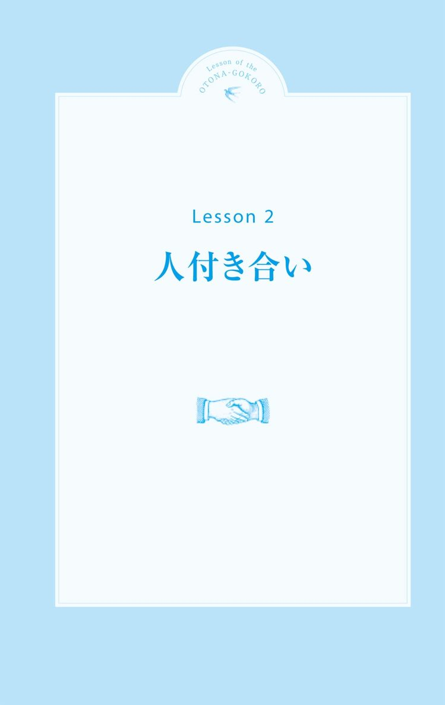
18 相手の顔色ばかりうかがって疲れてしまう
Check!
□「気が利くね」と言われるとホッとする
□場の空気を読んでから、発言するようにしている
□他人の意見を優先してしまう
他人に気を遣ってばかりの毎日
なんだかカリカリしている先輩やムスッとしている上司、いつも周りの人が気になって、集中できない自分が情けない。
こんな自分を変えたいけど、誰かに相談して変に思われるのも心配だし、一体どうしたらいいんだろう。
人の機嫌が気になるのはなぜ？
機嫌が悪そうな人がいると、関わることを過度に抑えてしまったり、反対に無理に接しようとしたりして、疲弊してしまう方がいます。
相手から、八つ当たりされたり、怒られたりするんじゃないかと思い、傷つかないように相手との関係に予防線を張ろうとしてしまうのです。それとは反対に、気づかないうちに自分が相手を傷つけてしまうことも。
確かに人と関わると面倒なことがたくさん起こります。しかし、軋轢を避けようとすると、人との距離感や関わり方がますますわからなくなり、さらに強い不安を感じてしまいます。
人間関係は何度もトライ＆エラーを繰り返すことで、自分も相手も楽な関わり方が身につきます。もし仮に失敗したとしても、何度も挑戦することで挽回することだってできるのです。
原因は私かも！？
人の顔色を気にしすぎる人は、「私、何かしたかな？」と、相手の機嫌が悪いのは自分のせいだと思ってしまいがちです。
人の気持ちを察しようとすることは悪いことではありませんが、その思いが強すぎると、相手の行動一つ一つに振り回されてしまって、その人と一向に距離を縮めることができなくなってしまいます。
どんなに親しくても、人の心を読みとることはできないものです。人に配慮することはもちろん大切ですが、人の感情に責任を持つ必要はないのです。
また、自分が思うほど、人は周りのことを気にしてはいないもの。特に機嫌の悪い人は、自分のことで手一杯で、他人のことを考える余裕がないだけなので、あえて気にしないことも、大人女性の優しさであり、配慮とも言えるのです。
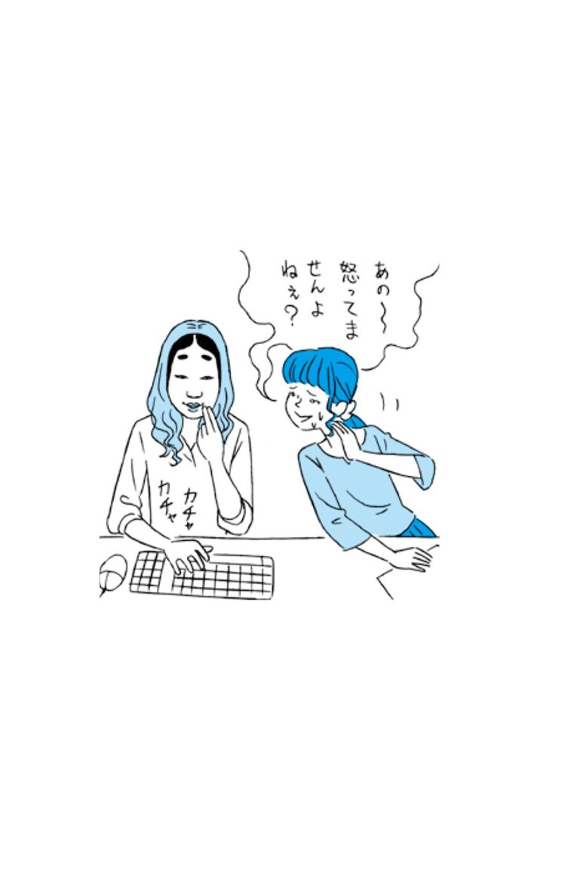
Lesson of the
OTONA-GOKORO
18
オトナ心のご提案
♥苦手なタイプの人を分析してみる
いつも自分が気にしてしまう人はどんなタイプの人か、分析してみませんか？
昔苦手だった誰かに似ているなど、意外な理由が見つかるかもしれません。
♥チョコを差し入れしてみる
機嫌が悪い人が視界に入ってくるだけでも、気分が滅入ってしまうもの。そんなときは、「おつかれさま」とチョコをそっと差し入れしてみては？ 思いがけず、笑顔が見られるかも。
19 頼まれると断れない
Check!
□皆から慕われる人でありたい
□お人よしな性格だ
□自分の意見を言葉にするのが苦手
また引き受けてしまった・・・
自分のことだけでも手一杯なのに、人に頼まれると嫌と言えなくてどんどん時間がなくなってしまう。ちゃんと言えない自分が情けないし、結局一人残業になってしまったり。一体、上手に断れる人になるにはどうすればいいんだろう。
引き受けるほうが実は楽？
どんなことも引き受けてしまう人は、断るよりも引き受けたほうが楽なので、その場の気まずさを避けたいという心理が隠れています。
断る理由や言い回しを考えたり謝ったりするくらいならば相手も喜ぶことだしと、深く考えずに引き受けていませんか？ それではいつまでたっても断り下手なままになってしまいます。
本人がやらずに頼んできているということは、「あなたしかできないからお願いしたい」ということか、「他の誰がやってもできるものだから」のいずれかです。
前者であれば、引き受けるしかなくても、無理難題までも引き受けようとはせず、自分が今できることと無理なことをキチンと伝えることが必要です。
後者であれば、状況によっては断る勇気をもちましょう。自分が我慢すればいいと引き受けても、頼んだ相手が、暇そうにしていたりすると「自分でやればいいのに！」とイライラしたり、嫌な人だと思ったり、反対に「まだ終わらないの！？」と、相手から「ちゃんとやらない人」と思われてしまったり、人間関係を悪化させてしまうことにもつながりかねません。
そうならないように、まずは「断わっても嫌われはしない」ことを、心に留めておきましょう。
頼まれたことはつい引き受けたい気持ちになりますが、無理をしすぎることは、長い目で見れば誰の得にもならないのです。
気持ちのいい断り方とは
断り慣れていないと、どのように言えばいいのかわかりません。相手も自分も嫌な思いをしない断り方を身につけることができれば、人間関係もスムーズに進むようになります。
コツは自分の状況を簡潔に伝え、限定的に断ること。まずは「申し訳ありません」や「ごめんなさい」とお詫びの一言から。これで相手には、断りの言葉がくるのだなと心の準備をさせることができます。
それから自分の状況を簡潔に伝えること。今日中に完成させなくてはならない書類がある、今日の夜はどうしても外せない予定がある、といった程度で構いません。逆に長々と説明したりすると言い訳のように聞こえてしまいます。
今回の仕事は引き受けることができません、今日は難しいなど、「その仕事は」や「今日は」というように、限定的に断りましょう。可能であれば、明日でしたら可能です、などと代替案を出すことができれば、断ってもお互いに嫌な思いをすることはありません。
理由もなく断ったり、とにかくできないと曖昧にしたりすることなく、またいつでも声をかけてくださいね、という姿勢を伝えることがなにより大切です。
Lesson of the
OTONA-GOKORO
19
オトナ心のご提案
♥締切日と見積もり時間を把握する
それぞれの締切日だけではなく、どのくらいの時間や手間がかかるのかを確認しておきませんか？ 頼まれた時に、自分に余裕があるのかを数値でキチンと確かめることができます。
♥言いにくいことこそ大きな声で話す
断る時こそ、しっかりと大きな声で伝えてみませんか？ どんどん声が小さくなっていくと、相手にも伝わりにくいし、自分だけが悪いような気がしてくるもの。ハキハキと話すと、断られても気持ちがいい人だなと思われます。
20 愚痴ばかり言う人に困っている
Check!
□人から悩み相談をされることが多い
□本音を言えないタイプだ
□「悩みがなさそうだよね」と、言われることが多い
時々ならばいいんだけれど・・・
仕事をしない新人がいる、上司から嫌味を言われた、友達に約束をすっぽかされたなど、人に愚痴をこぼしたくなる時はよくあるもの。
話すことでストレスを解消して、リフレッシュできるのであれば、愚痴や噂話もすべてが悪いものではありません。
けれど、会えばいつも愚痴ばかり話す人といると、聞いていてあまり気分のいいものではないですよね。聞きたくもない話に付き合わされて、なんだか時間をムダに使っているような気すらしてきます。
なぜいつも愚痴ばかり言うの？
愚痴を言う人にとっては、話す内容自体、実はそれほど深刻ではないことが多いのです。あとで、「あの件どうなったの？」と尋ねると「え、なんのこと？」と返ってくるなんてことも。
そうした人は、自分は間違っていない、自分を認めてほしいという気持ちが、愚痴という形で外に出ているだけなのです。
また、自分の話を聞いた人がどう反応するかで、敵か味方かを判断しようとしていることも。
裏を返せば、常に自分の味方がほしいという不安が隠れているのです。
上手なお付き合いの仕方
聞きたくない話だとしたら、聞かないのが一番。とはいえ、露骨に避けるのではなく、相手も自分も不快な思いをしないように、大人な対応をとりましょう。
話を聞いている時、相槌を打っていませんか。
こうした言葉は、その話に「同意した」ものととらえられてしまい、あとから余計なトラブルに巻き込まれることにもなりかねません。
「そうなんですか」など、私は知りませんが、という言葉で、適切な距離を保つことが大切です。
Lesson of the
OTONA-GOKORO
20
オトナ心のご提案
♥話題を変える
話している本人が主役になる話題を切り出すことで、相手の思いを満たしてみてはいかがでしょう。例えば、その人が身に付けているものを褒めたり、行きつけのお店を聞いたりと、現実的で楽しい話題を提案することで、活き活きとした話を引き出すことができます。
♥その場を離れる
思い切ってその場を離れる勇気をもつことも大切。無言でいなくなったりすると、相手に不信感を与えたり、自分自身も余計な後ろめたさを感じてしまうので、理由を言って席を外しましょう。
21 苦手な人とうまく付き合えない
Check!
□自分の世界観を大事にしている
□人の好き嫌いが激しいほうだ
□苦手な人とはなるべく関わらないようにしてきた
「なんとなく苦手」と感じる理由とは？
どんなところでも苦手な人の一人や二人はいるもの。付き合わずにすめばいいのですが、そうはいかないからこそ、悩みはつきません。
一言で「苦手な人」と言っても、そのきっかけや度合はいろいろ。自分の中にある苦手意識への対処法を知り、気持ちを穏やかに保つようにしたいものです。
特に明確な理由もないのに、なんとなく苦手意識を感じるのは、過去の経験が作り出している「先入観」である場合がほとんどです。
学生の頃に合わなかったタイプの友達や、意地悪をしてきた人に似ているからといった、とても個人的な理由で一方的にマイナスイメージをもっていませんか？
また、その人自身ではなく、職業や肩書きに対して、固定的なイメージを持っている場合もあります。これも情報や知識などからくる先入観のひとつ。もちろんイメージどおりの人かもしれませんし、付き合わなくてすむなら無理をする必要もないでしょう。
けれど、どこにいっても苦手な人が多くいるという人は、先入観を強く持ちすぎている可能性も。話してみたら意外といい人だったなど、いい関係になれる人まで見過ごしてしまったり、人間関係を狭めてしまったりしているかもしれません。
なんとなく苦手、と感じた時には「本当はどんな人なんだろう？」と、相手に興味をもつことから始めてみましょう。
「苦手な人」の特徴を知る
悪い人ではないのだけれど、一緒にいるとなんだか疲れる、居心地が悪い、という場合には、その人のどこを苦手だと感じているのだろう？ と理由を考えてみましょう。
話し方がきつく感じる、嫌なしぐさをするなど、その人に限らず、対人関係でよく苦手意識をもってしまうパターンを見つけることができます。
自分の苦手なパターンを知っておくと、事前に苦手対策をすることができるので、自分が受けるダメージが小さくてすみます。
「苦手な人」への対処法
いつ話をしても、嫌な気分になってしまう苦手な人は、どうしてもいるもの。
自分を保ち、人間関係を悪化させないためには割りきって付き合うことも必要です。
苦手な人だからこそ、必要な報告は先にしてしまうこと。つい後回しにしたくもなりますが、先にすませてしまうことで心を軽くすることができます。
また、事前に話す内容をメモでまとめておくと、焦って失敗することがなくなり、相手と関わる回数を減らすこともできます。
疲れやストレスが溜まることも最初から考慮しておき、無事に終わったら好きなドリンクを飲もう、といった小さなご褒美を用意しておくとよいでしょう。
他人を変えようとしないこと
ここが嫌、ここを直してもらいたい、と相手を変えようとしないこと。
変えることができるのは自分の心の持ち方と行動のみです。その結果として、相手も態度が変わるかもしれませんが、期待をしすぎないことも肝心です。
土台の関係を忘れないこと
仕事関係、趣味の仲間、彼の友達など、その人と知り合ったもともとの関係を忘れないこと。
どこまで入り込んでいいのかに悩んだら、その人とは付き合う目的を意識するようにすれば、程よい距離感を保つことができます。
Lesson of the
OTONA-GOKORO
21
オトナ心のご提案
♥自分の中の先入観を見つける
その人を深く知る前に、先に苦手なタイプと決めつけてしまうのはどんな時か、自分の中にある先入観が何かに目を向けてみましょう。
♥共通項を見つける
好きなスポーツや趣味が同じといった共通点が見つかると、人は親近感をもつことができます。相手が好きなことから、意外な一面を知り、会話が弾むことも。相手の趣味の話題から、話を広げてみてはいかがでしょうか。
22 他人の幸せを素直に喜べない
Check!
□うわさ話にはつい聞き耳を立ててしまう
□友人の結婚報告を聞くだけで、士気が低下する
□自分の将来、不安だらけだ
心から祝福できない
転職して毎日が楽しくて仕方ない、旦那様と海外旅行へ行ってきたというような、順風満帆な人の話を聞いたり、SNSに投稿された楽しそうな写真を見て、なんだかイライラしたり、ひどく落ち込んだりすることはありませんか。
自分の心に余裕がないから
自分のことで精いっぱいな時に、人の楽しそうな話を聞いても、受け入れる心の余裕も祝福する力も湧かないものです。
失恋したばかりの時に、婚約した人の話を聞いたら、「私も彼と結婚したかったな......」と過去の失恋を思い出して悲しくなってしまったり、なんで私だけうまくいかないんだろうと悩んでしまったりと、自分のことで頭がいっぱいになるのは誰にでもあること。人の話を聞いて落ち込んでしまう時は、「今の私は余裕がないんだな」と自分の状況を認めてあげると、心が楽になります。
そんな時は、「よかったね」「おめでとう」と大人の礼儀として、きちんと相手にお祝いの言葉を伝えるだけで充分。無理に喜ぼうとしても、心の中にある悲しみや焦りが、気づかないうちに表情に出てしまうこともあります。
話を聞き続けなくても、なにかしら理由をつけて、さり気なくその場を離れてもいいのです。
時間が経って自分の状況も落ち着けば、心からおめでとうと言える日もやってきます。
自分とつい、比べてしまう
他人より上でありたい、羨ましいと言われる側でありたいと、常に誰かと競ってしまうことはありませんか。
それは、他人より優れているかどうかで自分の価値を判断する癖がついているからかもしれません。
人との優越を競ってばかりいると、常に優越感と劣等感を味わい続けることになり、自分自身の心の安定を得ることはできません。
人と比べている自分に気づいたら、「他人は他人、自分は自分」と考えるようにしましょう。
そして、その強い競争心を他人に向けるのではなく、自分を磨く原動力に変えていきましょう。
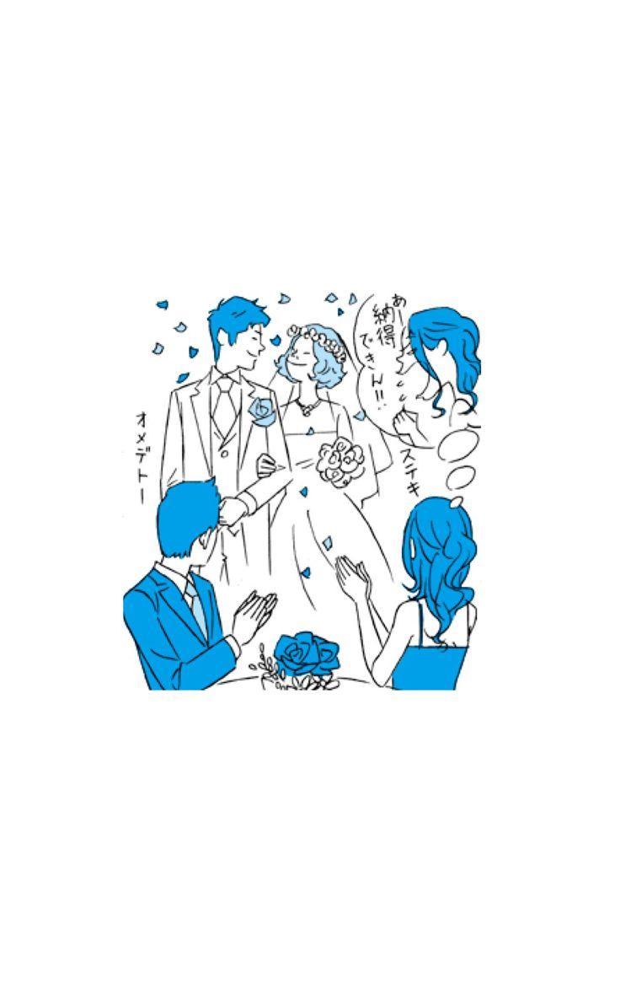
Lesson of the
OTONA-GOKORO
22
オトナ心のご提案
♥人から学ぼうという心をもつ
トントン拍子に進んだように見える人も、陰では多くの苦労や努力をしているもの。見える結果だけではなく、そこまできた経過から学んでみませんか。
♥プレゼントを探してみる
お祝いにささやかなプレゼントを探してみませんか？
その時はあまり喜べなかったとしても、プレゼントを探しているうちに、相手の喜ぶ顔を見たいと思うようになるかも。それだけでも充分な祝福の気持ちです。
23 友達がどんどん結婚していく
Check!
□親からの「いつ結婚するの？」攻撃に、過敏に反応してしまう
□結婚しないのは仕事が楽しいからなの♪（と思い込むようにしている）
□遊び友達が減って、今は自分磨きに忙しい
どうして結婚できないのかわからない
結婚したり子供が生まれたりと、自分の周りの人は皆、順調に人生を歩んでいるのに、私ひとりだけ何も進んでいないのはなぜなんだろう？ 私も皆と同じ頃には「奥さん」とか「ママ」って呼ばれるようになっていると思っていたのに。
一人だけとり残されていくような焦りや不安から、自分をどんどん追いつめてしまう気持ちが生まれていませんか。
こんなはずじゃなかったのに・・・
あの人のプロポーズを受けていたら、今頃幸せだったかもしれない、あのとき仕事を辞めて彼についていけば結婚できていたのに......。
そんな過去の恋愛ひとつひとつを振り返って、後悔ばかりしていませんか。
なりたいと思っていた自分と、現実の自分との間に大きな隔たりがあると、違う道を選べばよかったと、過去を悔やんでしまいがちです。
けれど、その時に一生懸命悩んで出した結果を今いくら否定しても、過去に戻ることも今を変えることもできません。後悔し続けるのは、昔の自分を責めたり、今の自分が嫌になったりと、自分自身に刃を向けてしまうことなのです。
感情に任せて勢いで選んでしまった、もっと我慢すればよかったと、過去の自分について思うのであれば、反省はしても後悔はしないように。今と未来に向けてその経験を教訓にしていきましょう。
あなたの気持ちが置き去りになってない？
結婚は早くしないと相手もいなくなるし、出産するなら若くなければいけないしと、タイムリミットだけを先に決めてしまって、それ以上に大切な自分の思いを見失っていませんか。
結婚や出産をしたいと思っているのであれば、パートナーに自分ができること・したいことはどんなことか、二人でどんな生活をしていきたいのかなど、結婚に対しての自分の思いを伝えてみましょう。早いか遅いかは幸せの基準ではないのです。
思い描いていたとおりに人生が進むことはありません。焦りや不安でいっぱいになった時こそ、慌てて走り出さずに一旦立ち止まって、自分自身の思いを整理してから歩き出してみても、決して遅くはないのです。
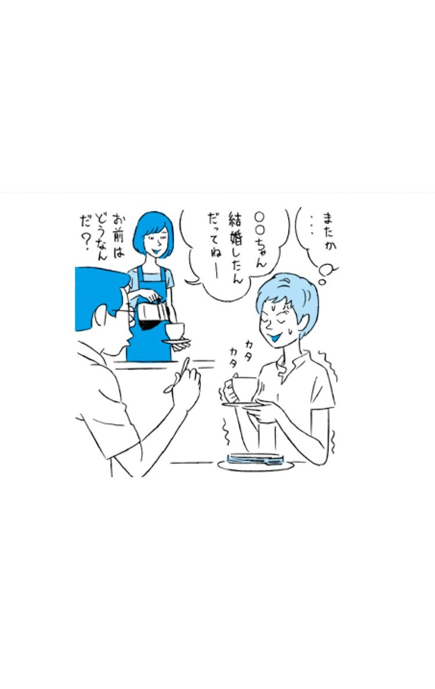
Lesson of the
OTONA-GOKORO
23
オトナ心のご提案
♥幸せ比べをしない
目に見えるできごとで、幸せの勝ち負けにこだわっているのなら、その競争心はきっぱり捨ててしまいましょう。
幸せは目に見えるものではなく、心で感じるもの。人と比べることはできないのです。
♥彼との未来を考える
今、付き合っている人とはこれからどうしていきたいのかを、真剣に考えてみてはいかがでしょうか？
結婚をしたいと思っているのか、一生傍にいたいと思っているのか、彼との未来を想像してみましょう。
24 つい見栄を張ってしまう
Check!
□女子会には高価な物を身につけていく
□友人の旦那のステイタスが気になる
□周囲の人から一目置かれる人でありたい
特別な私でいたい！
人と会う時は普段よりいいバックを持ったり、彼氏自慢をしたりと、程度に差はあれ見栄を張ることは誰にでもよくあること。けれど、自分自身が疲れてしまうようであれば、見栄を張る自分の心を確認してみることも必要です。
自分の価値を高く評価されたい、周りよりも上の存在でいたいと思うあまり、「充実している私」を演出して、付き合う人まで選んでしまったりする人がいますが、それが続くといつも自慢話ばかりで、プライドが高くて付き合いにくい人だとか、他人を見下している嫌な人だと思われて、だんだん周りが離れていってしまう危険性があります。また、常に会話の中心でいたい、特別扱いを受けたいと思っていると、自分のことでいっぱいいっぱいになって、周りに配慮をする余裕がなくなります。
評価されないと不安？
他人からの評価ばかりが気になるのは、コンプレックスを見せたくないと思う気持ちや、自分への自信のなさが隠れていることも。他人から誉められることで初めて、自分の価値を実感するという癖がついてしまっているのです。
けれど、他人がどこを認めてくれるかはわからないもの。そんな不安定なものに自分の価値を求め続けていては、いつまでたっても心は満たされません。
外を飾るための時間や手間を、自分と向き合ったり、内面を磨くことに変えていくことで、見栄を張る必要がなくなって、自然体でいられる場所や相手が増えていくようになります。
いつも無理をしてしまうのならば、そろそろ、自分のことは自分で認めてあげませんか。
Lesson of the
OTONA-GOKORO
24
オトナ心のご提案
♥自分のコンプレックスを認める
コンプレックスと真正面から向き合って、少しずつ克服していきませんか？ 変化するたびに、それが小さな自信となって、あなたを輝かせてくれるはずです。
♥新しい習い事を始める
誰かに自慢するためではなく、自分が心からやりたいと思っていることを始めてみませんか？ 好きなことを始めると、生活にリズムが生まれて、それが心にもよい刺激となるのです。
25 いいなと思う人はみんな結婚している
Check!
□ずっと独り身なのは、自分に相応しい素敵な男性がいないからだと思う
□初対面の男性の左手薬指を、ついチェックしてしまう
□結婚に求める条件がいくつもある
いい男は残っていない？
最近、いいなと思う人は大抵が既婚者や彼女持ち。
誰でもいいわけじゃないし、そろそろ年齢的にも結婚を視野に入れられる人と付き合いたい。でも、そんな独身のいい男ってなかなかいないのよね。
先入観が作るいい男
「いい男ってみんな結婚してるのよね」なんて、独身同士で集まると出てくる定番な台詞。
果たして本当にいい男はみんな結婚しているのか？ というと、もちろんそんなはずはありません。これは「いい男先入観」を作り出してしまっているのです。
結婚している ＝ 妻子を養う経済力がある
結婚している ＝ 一人の女性を大切にしている
結婚している ＝ 女を理解している
そういった、既婚男性に対しては肯定的なイメージがあるので、「結婚しているからいい男」に見えてしまうのです。
また、結婚しているということは、少なくともその男性の「妻」の、お墨付きに思えるので、隣の芝生は青く見えるのが、既婚者なのです。
独身にいい男がいないのはなぜ？
結婚願望がある男性ほど、まずはお互いをよく知ってから付き合いはじめ、その付き合いがうまくいったら結婚相手として考えよう、と段階を追って冷静に判断したいと思っています。
それだけ責任感があり、二人の将来を真剣に考えようとしているのが、いい男である証拠。
だからこそ、出会ってすぐに自分のことを「結婚相手」だと判断されていると感じると、自分自身ではなく条件を見られているのではないかと思って、男性は離れていってしまうのです。
また、そうした男性ほど、出会ってすぐに結婚をちらつかせたりしないため「この人は結婚願望がない人なんだわ」とすぐに諦めて、一度会ったきりで連絡もせずに終わらせてしまっているなんてことはありませんか。
結婚は自分のペースだけで進めようとすればするほど、うまくはいかないもの。一生を共にする相手だからこそ、ゆっくり判断したいと思う人が多いことを意識してみましょう。そうすると、すでに知り合っている人の中にも、結婚につながる可能性のある人がいるかもしれません。
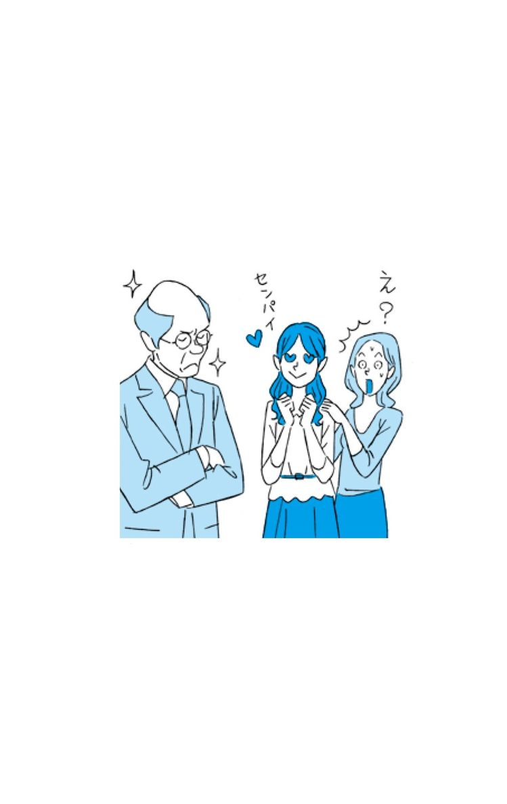
Lesson of the
OTONA-GOKORO
25
オトナ心のご提案
♥先入観を捨てる
表面的な条件だけを見て、相手のことを決めつけてしまう先入観を、まずは捨てましょう。
それだけでもグッと人間関係が広がります。
♥男友達をもつ
最初から結婚と力まずに、まずは気楽に話せる男友達を作ることから始めてみませんか。そこから恋愛に発展する可能性だってありますし、男性側の意見を聞くことは、自分の視野を広げる機会にもなります。
26 なんであんな子がモテるの！？
Check!
□メイクや服装には人並み以上に気を遣っている
□自分の顔面偏差値は、平均より上だと思う
□男性の言う、カワイイ子の基準がよくわからない
あの子がモテるのが納得できない！
特に目立つわけでもないし、すごく美人でもないのに、なぜかいつも彼氏が途切れず、周りが放っておかない子がいる。職場でもすごく仕事ができるとか、カワイイとかってわけでもないのに、上司や同僚からチヤホヤされているし、なんだかムカッとする。一体、あんな子のどこがいいわけ！？
常に自分が一番でいたい？
自分が一番チヤホヤされていたい、大事に扱われたいという願望が強すぎて、自分以外の人が好かれていることを認めたくないのでは？
特に、自分にないものを持っている人がモテている場合には、つい嫉妬をしてしまいがちです。
いちいち相手の言動にイライラするのではなく、その人のよさをじっくりと観察して、とり入れたいと思うよいところを見つけてみることをオススメします。
好かれる人の共通点
人の好みはそれぞれですが、好かれる人に共通する点がひとつだけあります。それは、受け止めてもらえたなと相手が感じる「聞き上手な人」であること。
職場でも恋愛でも、自分の存在を認めてくれる人のことは嫌いにはなかなかならないもの。
反対に、何を話しても「でも」とか「いや」と最初から否定や反論の言葉で返してきたり、ムッとした顔をしている人とは、誰でも距離を置きたくなってしまいます。
また、興味がないことには適当な態度をとる人や、自分の主張ばかりをする人からも、相手は離れていってしまうもの。
「この人にはつい話したくなるな」と思わせる「聞き上手な人」であることが、好かれる大人女性に共通する特徴なのです。
Lesson of the
OTONA-GOKORO
26
オトナ心のご提案
♥自分に足りないものを知る
自分に不足していると思うところを客観的に見つめてみませんか。
見習いたいと思うことがあれば、素直に取り入れることができる柔軟さをもつことも大人女性の魅力になります。
♥相手の話を最後まで聞く
相手が言い終わる前に自分が話し始めていませんか。まずは相手の話を最後まで聞くだけでも、相手は安心して、受け入れられたと感じるものです。
27 些細なことにイライラする
Check!
□気が利かない後輩を見ているとイラつく
□上司が使えないと思っている
□身近な人に当たってしまう自分に落ち込む
毎日イヤなことばかり
バスはなかなか来ないし、雨は急に降ってくるし、朝からホント嫌な気分。会社でも周りの人にイライラして、仕事にもあまり集中できない。こんな小さいことを気にしてばかりの自分って、心が狭いのかな。
体調を見直すきっかけにしよう
なんとなくイライラする日は、自分自身の体調を見直す日にしましょう。
イライラは心の中で起こるので、身体とは関係ないと思ってしまいがちですが、実は体調に左右されていることが多いもの。
例えば、寝不足が続いていたり、肩こりや頭痛、女性の場合は生理前で体調がいまいちだと、いつもならば気にならないことが、目についてしまうのです。
体調を把握しておけば、今日は調子がよくないから早めに帰るようにしよう、イライラしそうになったらお茶を飲もうと、調整する心構えができます。
手帳に毎日の調子をメモしておくだけでも、心のブレと身体の調子が重なっていることがわかるようになるので、毎月いつ頃がイライラしやすいかなども予測ができます。
自分のルールが正しいと思ってない？
他人に対してイライラしやすい人は、相手の言葉や態度が、自分が正しいと思っているマイルールと違う時にイライラしてしまいます。
人それぞれ、異なるルールを持っているからこそ、どうしても譲れないことはしっかりと話し合うことが大切。また、それほど重要ではないことは相手に譲る勇気をもつと、自分自身も楽になり、人間関係がスムーズになります。
周囲の人から気難しい人だと思われてしまわないように、何ごとも柔軟に考えるようにしましょう。
Lesson of the
OTONA-GOKORO
27
オトナ心のご提案
♥自分予報をしてみる
天気予報を見る時、一緒に「今日の自分はどう？」と、自分の調子予報をしてみませんか？ 少しでも自分を観察する時間をもつようにすると、一日の過ごし方が変わりますよ。
♥大事な人とはルールを共有する
恋人や夫など、長く一緒に過ごす人とは、マイルールを共有してみませんか？ 朝食は「ご飯派」「パン派」のように生活スタイルが異なっていることを知らずに過ごしていると、いつか爆発するなんてことも起こりかねないので、注意が必要です。
28 いつも私ばっかり忙しい
Check!
□暇そうにしている人を見るとイラッとする
□周囲の人が自分よりも劣って見える
□なんだか自分ばかりが、損な役回りをしている気がする
なんで私ばっかり！？
仕事が山積みで忙しいのに、周りを見ると暇そうにお茶を飲んだりおしゃべりしたりしている人がいる。そんなに暇なら手伝ってくれてもいいのに！ と思うけど、口には出せずにイライラ......。
いつも私ばっかりつらい思いをしていると感じるときは、ちょっと考えてみましょう。
決めつけ心があるのかも
まず、周りの人が暇そうに思えるのはなぜかを考えてみましょう。
自分にとっての「忙しい」とは、電話をしたり打ち合わせをしたりと「人と交渉していること」だと思っていると、それ以外のことをしている人は、暇そうに見えてしまいます。
また、「お茶を飲んでいる人 ＝ 暇な人」といった一方的な見方をしていることはないでしょうか。
そんな自分自身の固定概念が、周りの状況を冷静に把握できない余裕のない心を生み出している可能性があります。
例えば、時間にゆとりがある人は、自己管理がしっかりできていて、計画どおりに仕事を進めているため、慌てることも少なく、ゆったりしているように見えるのかもしれません。
もし、ゆとりがあるように思うのなら「手伝ってもらえますか？」とお願いしてみたら、相手も手を貸してくれるのではないでしょうか。
一人で「あー忙しい」なんて言ったり、周りを無言で睨んだり、バタバタ大きな音を立てたりと、イヤミな態度をとっていませんか。
それでは周りも「触らぬ神に祟りなし」と遠巻きに見るようになります。
仮に手が空いていたとしても「手伝いましょうか？」とは言えない雰囲気を自分自身が出してしまっているのではないでしょうか。
嫌々やっているのでは？
仕事に集中しているときは、周りのことは気にならないもの。他人が楽をしているように見えるのは、自分自身が仕事を苦痛に感じているからかもしれません。「どうして私ばかりがこんなに大変なの？」という不満を感じているのです。
暇そうに見える人ほど、仕事への取り組み方が上手な人が多いものです。事前準備を怠らず、丁寧に取り組むことでトラブルが起こらないように意識して仕事をしている、そんな時間にも心にもゆとりがある人が、一見すると暇そうに映る場合もあるのです。
自分だけが忙しいと感じるのなら、周囲の人に、どんなことを意識して仕事をしているのかを聞いてみましょう。
手際のいいやり方や、忙しさから解放される心構えを学ぶ、いい機会となるかもしれません。
Lesson of the
OTONA-GOKORO
28
オトナ心のご提案
♥マニュアルを作ってみる
他の人にお願いしやすいように、簡単なマニュアルを作ってみませんか？
作ることで、自分自身も仕事の段取りがわかるようになったり、忙しくなっている原因が見つかるかもしれません。
♥仕事を分類してみる
抱えている仕事を分類してから取りかかってみませんか？
「締切が近いもの」「重要なもの」というように、緊急度と重要度で振り分けていくことで、優先順位がわかるようになります。
29 感情的になると、つい言い過ぎてしまう
Check!
□思い通りにならないことがストレスだ
□黙っていればいい女だとよく言われる
□他人の言葉にいつも過敏に反応してしまう
言い過ぎたと後悔してばかり
カッとなってしまうと、つい言わなくてもいいことまで言ってしまい、後から一人でくよくよ。
もっと冷静に話をできるようになりたいけれど、つい怒りにまかせて暴言を吐いてしまう、そんな自分をなんとか変えたい。
誰しもつい言い過ぎたと後悔することは一度や二度はあるもの。そんなとき、自分にストップをかけて心を穏やかにするにはどうしたらいいのでしょうか。
感情的になってしまう時の心とは？
感情的になってしまう時に、心の根底にあるのは自分を認めてほしいという欲求です。
自分の言いたいことが伝わっていない、一方的に責められたと感じた、そんな時に人は、「どうしてわかってくれないの？」と怒りを爆発させて、相手を責めてしまうのです。
けれど、感情的に言えば言うほど、相手にわかってもらうことはできず、ますます相手も否定的な態度をとってくるという悪循環にはまってしまいます。
感情的に怒りをぶつけてしまう相手とは、自分を受け入れてほしいと思っている人なのだということに気づきましょう。
まずは、あなたに認めてもらいたいと思っている素直な気持ちを、伝えてみることが、お互いのストレスを軽減するための最初のステップです。
カッとしてしまった時の対処法
つい、カッとなって言ってしまった後は、あんなこと言わなきゃよかった、言い過ぎてしまったなと悔やむことがほとんどです。
感情的になって投げ捨てるように言ってしまうと、人間関係を悪化させ、自分自身の評価も下げてしまいます。特に職場では感情的になっている時こそ、言葉に注意したいもの。
感情的になった時、言い過ぎないためには「変える」ことが得策。
まずは「場所を変えること」。今いる場所や、相手から離れることです。トイレにいくでも、飲み物を買うでもなんでもかまいません。その場から離れるだけで落ち着くことがほとんどです。
場所を変えることができないならば、「時間を変えること」。
少し時間が経つと、何をあんなに怒っていたんだろうと、自分でも忘れてしまうことがしばしばあります。これは後で言うことにしようと、時間を置くように心がけてみましょう。
最後に「言葉を変えること」。
違う表現ではどう伝えることができるだろうかと考えてみるだけでもぐっと冷静になることができます。
熱くなっているときは「変える」を意識すること。
これは自分が相手から感情的な言葉をぶつけられている時にも応用できます。
Lesson of the
OTONA-GOKORO
29
オトナ心のご提案
♥どんな関係になりたいかを考える
つい感情をぶつけてしまう相手とは、どんな関係になりたいのかを考えてみませんか？
本当は仲良くなりたい、いろいろ教わりたい、そんな気持ちがあるのなら、それをストレートに伝えてみてはいかがでしょう。
♥リセットスポットを見つける
感情的になった時に、心を落ち着かせるリセットスポットを見つけてみませんか？
近くのカフェでも、日当たりのいい窓辺でもいいので、ここにいくとスッキリするという場所をいくつか用意しておきましょう。
30 相手の褒め言葉を素直に受け入れられない
Check!
□自分にあまり自信がない
□自分に厳しいほうだ
□お世辞を言うのが苦手
素直に喜べるようになりたい
「カワイイね」や「できる人だよね」なんて嬉しいはずの言葉を言われても、素直に喜ぶことが大の苦手。
「ありがとうございます」と笑顔で返せる後輩が羨ましいような悔しいような......。
褒められ下手なのかも・・・
自分では大したことはないと思っている自分に厳しい人には、褒められ下手な人が多いようです。
自分よりももっとできる人がいるのにとか、これは失敗作なのにと、自分に対して厳しい人は人の言葉を素直に受け入れるのがとても苦手です。
謙虚さという点では素晴らしいのですが、それを前面に出しすぎると、相手の好意まで無駄にしてしまう恐れがあります。
「ありがとうございます、まだまだですが、頑張ります」と、お礼を言った上で、自分の気持ちを伝えてみてはいかかでしょうか。
「褒める」ことは、人間関係の潤滑油にもなるということも知って、自分も他人のよいところを見つける努力をしたいものです。
何か裏があるのではと勘ぐってしまう
常に疑り深い人は、他人の言葉をなかなか信用することができません。褒められたのは、何か頼みごとをしようとしているのではないか？ などと身構えてしまいます。
警戒心が強いこと自体は悪いことではなく、自分の身を守るためには必要なことですが、それがいき過ぎるといつまでたっても安心できる関係を築くことはできません。
すべてを信用する必要はありませんが、頭から否定するのも大人気ないので、褒め言葉は素直に受け入れつつも、自分が言われて嬉しかったことは、誰かにも伝えてあげるようにしましょう。
Lesson of the
OTONA-GOKORO
30
オトナ心のご提案
♥一日一回、自分を褒めてみる
今日は肌の調子がいい、周りに気配りができたなど、一日一回、自分で自分をこっそり褒めてみませんか？
まずは自分を認めることを続けてみましょう。
♥褒め語録をつくる
自分が褒められて嬉しかったことや、誰かが褒められていて、いいなと思った言葉をまとめておきませんか？
自分が誰かにいいなと思ったことを伝えたい時に役立ちます。
31 なんであの人ばかり評価されるの？
Check!
□自分は褒められて伸びるタイプだと思う
□自己アピールが苦手だ
□負けず嫌いなほうだ
こんなの納得いかない！
なんであの人が！？ と思うような人の評価が高く、スイスイと昇進していくのを傍から見ていて、納得いかないと思ったことは、誰しも一度や二度はあるはず。確かに世の中には、要領よくトントン拍子に進んでいるように見える人がいますよね。
自分の方が優れていると思っていない？
人間は自分より格下だと思っている人が高い評価を受けた時、うまいことやって、アピールがうまいだけだ、などとその評価を手に入れたことが本人の実力ではないはず、と考えてしまいます。これは、自己防衛心から起こるものなのです。ここで気づかなければならないのは、その人の実力を認めようとしない自分の心。見えないところで、相手が努力していた可能性だってあります。
冷静に事実を受け止められるようになれば、相手のどこが評価されたのか、自分に不足している能力は何なのかと、現実的な対処法を考えることができるのです。
世渡り上手を目指そう
他人の手柄を横取りしたり、他人を蹴落として自分だけ出世しようとする人は「ずる賢い人」であるのに対して、「世渡り上手」とは、自分の長所や成果を伝えることができて、求められていることをきちんと把握した上で、結果を出すことができる人のことです。
人を羨んだり、妬んだりするのは、自分自身がつらくなるもの。相手のよい部分を自分も身につけようとするほうが、ずっと建設的です。
特に仕事では、努力の仕方が方向違いならば、どんなに頑張っても、残念ながら高い評価を受けることはできません。だからこそ、求められているものを汲み取り、成果をしっかりとアピールできる人になることを、大人女性として目指したいところです。
Lesson of the
OTONA-GOKORO
31
オトナ心のご提案
♥他人のアラ探しをやめる
他人のアラを探すより、いいところを見つける習慣を身につけませんか。
色々な人の長所を少しずつ取り入れていくことができれば、自分もぐんと成長できるはず。
♥評価基準を知っておく
自分の周りではどんなことに対しての評価が高いのか、評価基準をきちんと把握しておきませんか？
会社によっては評価表があります。その基準を知っておくだけでも、やり方を工夫することにつながります。
32 注意するのが苦手
Check!
□相手にどう思われているかが常に気になる
□年下に慕われるよい先輩でありたい
□人と深く関わることが少し面倒くさい
直してほしいけど・・・
そこはちょっと直した方がいいんじゃないかな？ と気になるところがあるんだけど、お局さん、とか陰で呼ばれたり、うるさい人だなあと思われたりしたら嫌だしと、いつも言葉を飲み込んでしまう。
サラリと注意もできて、それでいて嫌われない先輩になりたいのになあ。
注意するのをためらってしまう理由
これは注意したいなあって時、どう言えば相手に嫌な思いをさせずに気づいてもらえるかなと、悩むことってありますよね。
大人女性になると、周りには下の年代も増えてくるので、相手を思えばこその注意や助言をすることが必要になってくる場面も増えると思います。
けれど、逆に反感を買ってしまったり、泣かれたり、嫌われたりしてしまったらどうしようと言えずにいることが多いのではないでしょうか。
当然、何も言わなければ、相手は気づかずにそのままなので、自分は一人でイライラしてしまいます。そんな関係を続けていると、人間関係もぎくしゃくして、お互いに成長することはできません。
言いにくいこともきちんと言えるようになることも大人女性が養いたい能力のひとつです。
お互いが嫌な思いをしないためには
お互いが嫌な思いをしないように注意をするには、シンプルなコツがあります。
① 主語に「自分」をつける
「I メッセージ」とも言われる伝え方です。
たとえば、早く提出してほしい書類があるときに、「早くしてもらえますか」と言うのではなく、「早く出してもらえると、私もすごく助かります」と、自分をつけること。
あなたの言動に対して、私はこう思う、こう感じるときちんと自分の気持ちを伝えながら話しましょう。
② 見える言動に対しての注意だけにする
「あなたを注意している」のではなく、「あなたの今の行動を注意している」のだ、ということ。
罪を憎んで人を憎まずと、昔からいう言葉があるように、その人自体を否定しないことです。
③ 相手にとってのメリットを伝える
「お客さんに呼ばれたらすぐに行きなよ」ではなく
「お客さんに呼ばれたらすぐに行くと、お客さんが喜んでくれて、君の売り上げも上がると思うよ」と、そのことが自分にかえってくるのだということを明確に伝えること。
この３点すべてを言うのではなく、いずれかをその時々に応じて伝えていくと、相手があなたの注意を受け入れやすくなります。
注意をするのは、あなたに期待をしているからなんだよ、ということもきちんと伝えてあげましょうね。
Lesson of the
OTONA-GOKORO
32
オトナ心のご提案
♥伝える場所に配慮する
注意をする時は、どこで伝えるかにも気を配ってみませんか。皆の前で言うのではなく、自然に話しやすい場所で本人にだけ伝えるという配慮をすると、相手も素直に受け取ってくれます。
♥いいところもきちんと伝える
ただ注意するだけではなく、普段感じている相手のいいところもプラスして伝えましょう。
どんなに些細なことでも、気づいて褒めてもらえることはやっぱり嬉しいものですから。
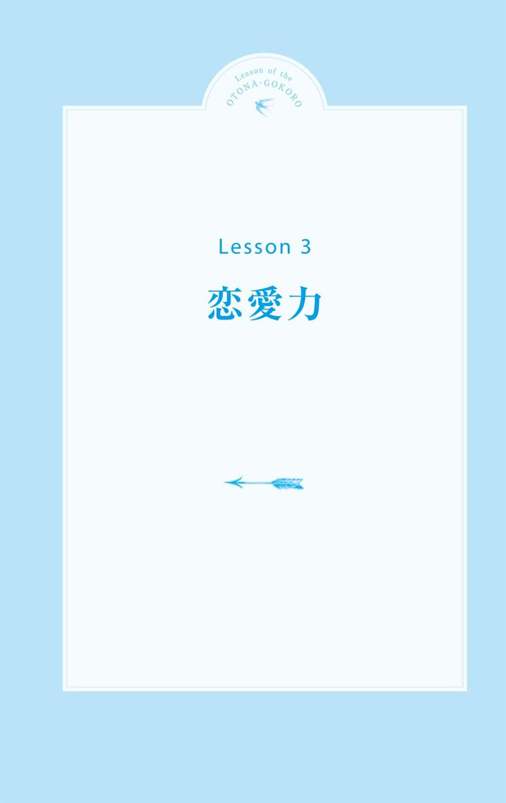
33 元彼が忘れられない
Check!
□元彼ほど私のことをわかってくれる人はいないと思う
□思い出の場所に行くと落ち込む
□元彼からの贈り物や写真が捨てられない
終わった恋を引きずるのはなぜ？
彼と一緒に行ったレストラン、もらったネックレス、フォルダに残ったままのメール。
恋はあちこちにその跡を残して去っていきます。時が過ぎれば、その思い出を大切にしまい、次の恋に進むことができますが、いつまでも引きずってしまって、苦しいままでいることも多いものです。
戻れないとわかっている恋への後悔を鎮めるにはどうすればいいのでしょう？
後悔ではなく、次への学びにしよう
友達の恋愛相談には簡単にアドバイスできるのに、自分自身は、意地を張って彼を傷つけるようなことをつい、してしまう。
女性は、恋愛の渦中にいると、どんな態度をとったらダメで、どうしたらいい関係を保てるのか、わかってはいても感情に流されてできなくなりがちです。
その結果、彼は離れてしまって、意地を張らずに謝ればよかった、あんな我儘を言わなければよかった、という後悔ばかり。
大人女性はそんな失敗をたくさん繰り返して、徐々に同じことを繰り返さないようになっていくものです。
いつまでも「今だったらうまくできるのに」と過去を後悔ばかりするのは、現実逃避でしかありません。
その時の自分ではできなかったのだと、しっかり過去と向き合うことで初めて、成長することができるのです。
同じ失敗を繰り返さないようにするためには、しっかりと記録をしておくことが大切です。
恋は盲目というように、好きな気持ちが強いと、自分を見失ってしまいがちです。だからこそ、冷静なうちに、次の恋をする自分への注意事項をまとめておくと、同じ失敗を繰り返さずにすみます。
過去の恋愛から学んだことを次に活かして、安定した恋をする大人女性を目指しましょう。
残ったままの気持ちを最後まで吐き出す
本当は好きなことをきちんと伝えられずに終わってしまった、言いたいことも言えずに悔しい思いだけが残っている、そんな「言えなかった思い」がずっとその恋をを引きずってしまう原因にもなります。
人は、相手に言えなかった言葉を自分の中で抱えてしまうと、過去にとらわれて動けなくなってしまうもの。
けれど、もう彼に伝えるのは無理なことです。仮に伝えられたとしても、あの頃の恋も彼も戻ってはこないのだと認めましょう。今できることは、言えなかった言葉を、違う方法できちんと消化してあげること。
信頼できる友達にお願いして、聞いてもらうのでもいいですし、一人きりの時に部屋で叫んだり、日記に書いたりして、とにかく心の外に吐き出してしまいましょう。
そうすれば、心の中にあった言えない言葉は徐々に小さくなって、次に進めるようになるのです。ただし、彼自身や不特定多数の人に伝わることだけは避けるようにしてくださいね。
Lesson of the
OTONA-GOKORO
33
オトナ心のご提案
♥次の恋の五箇条を書き留めておく
次の恋ではこうしようという誓いを書き留めておきませんか？
安定した恋をするために、失敗も大切な経験として蓄積していきましょう。
♥カラオケで熱唱する
言えなかった言葉を思い切り吐き出すには、思いっきり声を出すことも大切。失恋ソングをひたすら唄って、思いを出し切ってみませんか？
34 恋愛する気になれない
Check!
□恋愛で傷つくのが怖い
□彼氏がいない女友達とばかり群れている
□最近、体重計に乗っていない
すっかり恋愛はご無沙汰です
最近ときめくこともなく、彼氏いない歴も１年をはるかに越えてしまった。そろそろ誰かと付き合ってみれば？ なんて周りからは言われるけど、なんとなくそんな気分にはなれない。
このままだとマズいような気もするけど、でも、恋愛をするってどうすればいいんだっけ？
恋愛したくないわけではないのに、どうやって始めたらいいのかわからない時は、一体どうしたらいいのでしょうか？
恋の始め方がわからない？
恋の仕方を忘れたからできないのではなく、面倒くさくなっているからしようとしない自分はいませんか？
出会いの情報を探すこと、デートに行くための洋服を考えること、ダイエットしたりメイクをしたりと恋愛の準備をする、そんな恋愛力が激減しているなんてことはないですか。
恋はするものではなく落ちるものです。始め方よりも自分自身が恋に落ちるための行動をしていないこと、そして、相手に恋してもらうための努力をしていないから、今の環境にとどまっているのではないですか。
無理に恋愛をする必要はありませんが、いざという時のために準備をしておくことも大事です。
いつ恋に落ちても自信をもって相手に向かっていけるように、自分自身に気を配ることから始めてみましょう。
もう傷つきたくないから？
恋をする気になれないのではなくて、恋愛で傷つきたくないから、遠ざかっているのではないですか。
好きになっても振られるのが怖いから、どうせもう彼女がいるだろうから好きになっても無駄なだけとか、いい歳して痛い目にあいたくない、などというプライドから、恋愛を遠ざけてしまっているのかも。
「どうせ私なんて」や「いい歳をして」と、始める前から諦めている自分の心に気づきましょう。
始める前から諦めてしまっているのは、過去に誰かに言われて傷ついたことが恋愛コンプレックスになっているのではないでしょうか？
恋愛をする気になれないのは、自分の中にある自信のなさの表れ。
恋愛をしていない時間を自分に投資できる時間と考えて、コンプレックスの克服や新しい自分の魅力を見つけ出す時間にして、今の自分に自信をもつことから始めてみましょう。
Lesson of the
OTONA-GOKORO
34
オトナ心のご提案
♥身体に合うサイズの下着をつける
昔のままのサイズや着古した下着をつけているのなら、お店でサイズチェックを受けて、今の体にフィットした下着をつけてみましょう。新しい下着をつけることは恋をしようと思う恋愛感度をアップすることにもつながりますよ。
♥時間を有効活用する
恋愛に夢中で時間がなかった頃にはできなかったことを始めてみませんか？
楽しめることがあるということは自信にもつながり、恋愛にも意欲的になれるもの。時間があったらしたい、と思っていたことを見つけることから始めてみましょう。
35 結婚につながる人と出会いたい
Check!
□いいなと思う人は皆、結婚している
□結婚を意識し過ぎて、好きになるまでのハードルが異様に高い
□「運命の人」という言葉に弱い
結婚となるとうまくいかない
恋愛がなかなか結婚につながらない、次こそはと思うけれど、自分が乗り気になれなかったり、彼から結婚は考えていないと言われてしまったり。
もうそろそろ結婚につながる人と出会いたいけど、どんな人と出会えば結婚できるのかもわからないし、そもそも自分はどんな結婚がしたいのかもイメージできない。
そんな人はまず、自分が求める結婚観を考えることから始めましょう。
結婚に何を求めている？
恋愛と結婚では求めるものが違うという人は、結婚相手には、収入や職業といった外的条件ばかりをあげていませんか。
確かに結婚は生活であり、好きなだけでは難しいのかもしれません。けれど、もしその条件がないのならば終わりというのも寂しい結婚生活になりませんか。
結婚相手を選ぶ時、外的条件の他に、内的条件も考える必要があります。
一生を共にする人だからこそ、一緒に暮らし続けていきたいのはどんな人なのかを考えてみましょう
共同タイプと補完タイプ
結婚に求める内的条件には２種類あります。
「価値観や趣味、好きなことが似ている」「言わなくても考えがわかる」という、似た者同士の共同タイプ。
そして、「自分にないものをもっている」「新しい視点を与えてくれる」「できることが違う」という、性格や思考も違う補完タイプ。
それぞれは心への寄り添い方も違いがあります。
共同タイプであれば、外でハードな仕事をしてきた気持ちを「わかるよ、大丈夫？」と共感してくれたり、理解してくれたりするでしょう。
補完タイプであれば、自分の足りない部分に対して、こうしたほうがいいんじゃないかとアドバイスをしてくれたり、新しい視点を提案してくれたりします。
結婚に安らぎや共感し合える関係を求めているのであれば、共同タイプのような人と結婚すると、穏やかな生活ができるかもしれません。
お互いに刺激し合ったり、高め合っていける関係を求めているのであれば、補完タイプの人と結婚すると、常に刺激や学びがあるでしょう。
どちらのタイプにも、マイナスの面はありますが、それを加味しても、これからの長い人生を一緒に乗り越えていこうと思える人を見つけることが大切です。
共同タイプがいいと思うのであれば、話が合う人や同じ趣味・仕事をしている人の中に、今までは気づかなかった好みの相手がいるかもしれません。
補完タイプがいいなと思うのであれば、異業種の人や趣味の違う人の中に、新しい相手がいるかもしれません。
Lesson of the
OTONA-GOKORO
35
オトナ心のご提案
♥自分の価値観を見つめ直す
今までは職業や収入で対象外としていたことを見直してみませんか？
本当に自分が求めているのは何か、長い人生を一緒に歩んでいきたい人はどんな人なのか、心の在り方から見つめ直してみるいい機会になるのではないでしょうか。
♥友達夫婦と話してみる
結婚して数年経っている友達の家に遊びに行ってみてはいかがですか？ 新婚の人の話はよく聞きますが、結婚して落ち着いている友達の話は意外と聞かないもの。どんなところが結婚してよかったと思うのかを聞いてみることで、自分の結婚観を考える機会にしましょう。
36 彼が浮気している気がする
Check!
□メールの返信が遅いと不安になる
□彼の携帯メールをこっそりチェックしたい衝動に駆られる
□彼の帰りが遅い日が続くとひどく落ち込む
なぜ彼の浮気を疑ってしまうの？
大人女性たちは、いくつかの恋愛を経験してきて、気持ちが冷めて別れることも、彼の浮気によって自分が深く傷つくことも知ってしまうため、どんなに好きな人との恋でも、いつかは終わりが来てしまうのだろうと考えてしまいます。
「浮気してないよね？」と彼に聞いてしまうのには、いくつかの理由があります。
自分に自信がないだけかも？
「私よりももっと魅力的な女性はたくさんいるし、いつか彼に捨てられてしまうんじゃないか？」
そんな猜疑心から他の女性との接触を極度に嫌がり、相手を束縛してしまうのが、自分に自信がないタイプの女性の特徴。
エスカレートすると、まるでストーカーのように彼の行動をすべて把握していないと気がすまなくなってしまいます。彼の携帯メールをこっそりチェックしたりするのも、このタイプの女性に多い行動パターン。
そんな風に束縛されては、彼も逃げ出したくなってしまいますよね。相手を束縛するのは、相手を信頼していない証拠。そして相手を信頼できないのは、自分に自信がないからなのです。
まずは自分の気持ちにしっかりと向き合い、自分に自信をつける努力をしましょう。
彼に依存しているのでは？
代表的なのはメール依存症。彼に頻繁に中身のないメールを送っては、すぐに返事がないと心配になって何度も何度もメールを送りつけてしまうようなタイプの人がいます。彼からすれば、仕事中だよ！ と文句もつけたくなるはずです。
まずは彼が今どういう状況かを考えた上で、連絡をとる方法や頻度を考えることが、気遣いのできる大人女性の対応です。
そんなに彼のことだけに時間を割いて気にしてばかりいるということは、自分の現状に満足できず、時間を持て余しているともいえます。
相手の気持ちを考えずに自己中心的な行動ばかりをとっていては、相手も愛想をつかして、いつか離れていってしまいます。
そうならないためにも、自分を磨くための習い事や、成長するための勉強を始めるなど、彼を忘れてしまうくらい集中する時間をもつことが必要です。
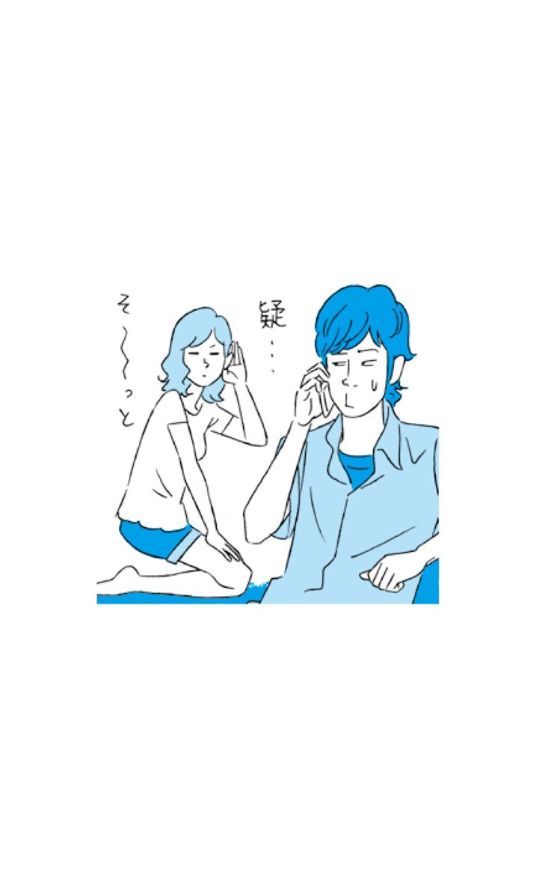
Lesson of the
OTONA-GOKORO
36
オトナ心のご提案
♥自分時間を充実させる
何かに夢中になっている女性は、輝いて見えます。何かに打ち込んで活き活きとしている女性に、男性は惹かれるものです。
自分にコンプレックスがあるのならば、それを克服するために努力をしてみませんか？
♥相手を気遣う心を忘れずに
自分中心的な行動をする前に、ひと呼吸置くように。すぐに連絡をとろうとするのではなく、今、相手がどういう状況かを察して、相手に負担をかけないように配慮できるような気遣いを身につけましょう。
37 自分ばかりが相手に尽くしてしまう
Check!
□昔は彼の方が私に夢中だったのに、今は立場が逆転
□相手に尽くす自分が好きだったりする
□いつか飽きて捨てられてしまうんじゃないかと、いつも不安
最近、彼が冷たくなった気がする
付き合い始めの頃はマメで優しかったのに、最近はメールの数も激減。デートも彼の家でゴロゴロするだけ。なぜ、男性は付き合い出すと変わってしまうのでしょう。
恋愛当初は相手に嫌われないようにと、いいところだけをお互いに見せ合いますが、徐々に地が出てくるのは男性も女性も同じ。あなた自身も、付き合い始めの頃には決して見せなかった姿を、今は彼に見せていませんか？ 男性はそんな姿を見ると、前のように手をかける必要性を感じなくなるのです。
がんばりが逆効果になることも
ここで、彼の気を引こうとオシャレをしたり、嫉妬心をあおろうと他の男性の影をちらつかせたりすれば、彼はまたかまってくれるかもしれません。
けれど、残念ながらそれは一時的なこと。こんなに手がかかる女とは結婚できないなと思われる可能性が高くなります。男性は女には甘くても、結婚相手にはシビアなのです。
彼と将来どうなりたいのかを考えた上で、彼の気持ちを引き寄せる術を身につけましょう。
思いやりを身につける
最近、彼がどんなことで悩んでいるのか、疲れている理由、どんなことをしてあげたら心から喜ぶかを考えたことはありますか？
彼が残業続きで疲れているのならば「週末のデートは無理しなくてもいいからね」といった心遣いができるような、相手の立場で考えられる女性が、彼にとってかけがえのない存在になります。
いつまでも優しくしてほしいと自分本位で考えて、彼を責めてばかりいるのは大人女性のすることではありません。彼へのスマートな心配りができるようになることが、長く深く愛される鍵なのです。
Lesson of the
OTONA-GOKORO
37
オトナ心のご提案
♥相手の反応に過度に期待しない
これをしたらきっと喜んでくれるはず、好きだと言ってくれるはず、と相手の反応を期待しすぎないことが相手を追い込まないで自分も気楽にいられるコツ。
ありがとうと言ってくれたら嬉しいなくらいに期待をとどめる余裕をもちましょう。
♥仕事の話を聞いてみる
彼がどんな仕事をしていて、どの時期が忙しいのか、何が大変なのかを知らない女性は多いもの。彼の仕事の話をさり気なく聞いてみては？ 彼にどう接すると喜ばれるかのヒントが見つかるはず。
38 昔の彼と比べてしまう
Check!
□女友達と飲むと、昔の恋愛話で延々、盛り上がってしまう
□つい、フェイスブックやブログなどで、元彼の近況を確認してしまう
□恋愛遍歴は結構激しいほうだ
昔の彼と比べてしまうのはなぜ？
大人になってからの恋愛はお互いが初恋の相手ではないことが暗黙の了解。自分も彼も、お互い知らない誰かと恋をして、楽しいこともつらいこともたくさん経験してきたからこそ、今の二人がある。
そんな過去の恋をキチンと整理して、今の彼との恋を始めたはずなのに、「これがあの人だったら......」と、昔の彼と今の彼を比べて、1人でイライラしたり、落ち込んだりしてしまうのはなぜでしょう。そんな比較をしても、自分にとっても彼にとっても、いいことなんてないってわかっているのに。
そんな風に元彼とつい比べてしまう自分が嫌になったり、さらには彼に八つ当たりしてしまったりしていませんか。
過去の恋が、今の恋も生み出している？
自分が成長できたのも、今の彼と付き合えたのも、過去の経験から学んだから。過去があるから今の自分があると考えたら、ふとした拍子に昔の彼を思い出して比較してしまうのは当然のことです。
私たちは何かを判断する時、過去に学んだ知識や経験を元に基準値を作り、今起こっていることを評価してしまうのです。例えば「優しいから」という彼を好きになった理由も、人によって「優しさ」の基準はまったく違います。「ほしいものを全部買ってくれる人が優しい」と感じる人もいれば、「愚痴を聞いてくれる人が優しい」と思う人もいます。
今の彼が何かをしてくれた時、もしくはしてくれなかった時に、膨大な過去の恋愛データから瞬時に基準値を出して、今の彼を評価するのは、実は自然なことなのです。
ただし、ここで気をつけなければいけないことがあります。基準値になっている「昔の彼」はいつも同じ人を思い出しているかもしれませんが、それは自分の過去の膨大な恋愛データから作り出している「理想の彼氏像」であるということ。
すべての条件を満たす人はいない？
何度も付き合っては別れてを繰り返して、先々、「ああ、あの時別れなきゃよかった......」と後悔しないように、今すぐにできることがあります。それは、「完璧な人はいない」ことに気づくこと。自分が作り上げた「理想の彼」は世界中を探しても見つかりません。反対に、すべてが理想どおりの彼と思っている時は、周りが見えていない危うい状態です。
とはいえ、どうしても譲れないことまで我慢しているような恋なら、不満しか生まれない関係になりつつあります。お互いの価値観の擦り合わせが難しいようであれば、もう次の新しい恋に向かってもいい時期なのかもしれません。
人はみなデコボコなもの。もちろん自分もそう。だからこそ人は惹かれ合い、恋をするのです。
自分や相手の足りない部分を探し続けるのではなく、不足する部分を補い合ったり、お互いのいいところを認めて伸ばし合っていける関係になることが、大人女性の恋愛なのです。
Lesson of the
OTONA-GOKORO
38
オトナ心のご提案
♥二人でやろうと提案する
完璧ではないからこそ、お互いの不足部分を補い合えるのが成長できる恋愛。彼に求めていることを、まずは自分から、二人でやってみない？ と提案してみるのはいかがですか？
♥一人きりで思い出に浸る
昔の恋を思い出すのは心の栄養にもなるし、たまには思い出に浸る時間をもつのもいいかも。だけどそれは1人の時にしましょう。
過去の恋愛ばかりにとらわれて、目の前にいる大切な今の彼を不用意に失ってしまわないように注意しましょう。
39 ダメな男とばかり付き合ってしまう
Check!
□母性本能をくすぐるタイプに弱い
□好きな人のためだったら、何でもしてあげたいと思う
□恋愛には安らぎよりも刺激を求めてしまう
ダメな男はなぜモテる？
女友達との恋愛トークでも、カフェで聞こえてくるお姉さま方の会話も、自分がどれだけダメな男と付き合っているかを語り合っていることってかなり多くありませんか？
そう、付き合っている彼女にしてみると「ダメ男」な彼らは、モテ市場では引く手あまたのモテ男たちなのです！ 彼女である自分も、今ではダメな男だとわかってはいても、彼の魅力に惹かれた時の想いが残っていて、この恋を断ち切れないのです。
彼らはどうしたら初対面の女心をつかめるかを充分に心得ています。釣った魚にはエサはやらないけれど、釣るまでは大量に撒きエサをすることをまったく厭わないのです。
悔しいけれど女心をあっさりと掴んでしまうダメ男たちの恋愛力をまずは見てみましょう。
① さりげない身だしなみを知っている
彼らはイケメンではなくても女心をつかむことができるポイントを押さえています。それは、抜け感のある清潔さと身のこなしです。
ハンガーへのスーツの掛け方が綺麗だったり、体型にあったワイシャツをスマートに着こなしていたり、食べ方が丁寧だったりと、女子が抵抗なく話せる抜け感のある清潔さと身のこなしをしっかりとマスターしているのです。
② タイミングのいいマメさを心得ている
多すぎると女性が引いてしまうアプローチも、彼らはほどよいマメさを心得ています。「今日はお疲れさま。気を付けて」程度の短いメールを送るタイミングや、女性が癒される言葉をさり気なく選ぶことができるのです。
③ 私だけだと錯覚を起こさせる
女心に生まれる「私以外にもしているんじゃないか？」という猜疑心を解かす方法も、彼らは当然身につけています。
「こんなに話しやすい子って初めてだなあ」などと、「君が初めて」を使用し、優越感に浸らせてくれるのは得意中の得意です。
④ 本当の私を見つけてくれた気を起こさせる
「いつも我慢しすぎだよな」とか「本当は寂しがり屋だもんな」なんて言葉をさらりと入れてきます。
普段は自分を抑えて頑張っている人にとって、私の弱いところをこの人はちゃんとわかってくれてるんだと、一気に恋に落ちてしまうのです。
⑤ ギャップを取り入れて仕上げに入る
ほぼ落ちかけている女心に最後にとどめを刺すのはいつもとは違う彼、というギャップ。
強気な彼が弱気な言葉を言ってきたり、いつもはマメにメールをしてくるのに、急に音信不通になったり。不安という刺激を与えることがとてもうまいのです。
そんな不安を解消しようと、今度は女性側が彼を励ましたり、何度も連絡をするようになって、いつの間にか彼に尽くす側になってしまうのです。
ダメな男にはまってしまう女心とは？
ダメな男にはまってばかりの時は、いつも同じパターンで恋をしている可能性が高いもの。ダメな男とばかり付き合っていることに気づけたのなら、自分の恋愛パターンを見直してみる余裕ができたという証拠。彼らのどの行動で恋に落ちやすいのか、自分が陥りやすいパターンを考えてみましょう。
寂しさから恋愛をしてしまうと、マメな連絡に落ちやすかったり、自分に自信がないと、本当の自分をわかってくれる人だと感じた時に、一気に恋に落ちてしまいがち。錯覚や不安も恋愛には必要な刺激ですが、刺激ばかりの恋愛は心を擦り減らせてしまいます。
ダメな男は誰といてもダメな男なのか？
違います。彼らも、唯一な女性とは、きちんといい彼氏、いい夫として生活していくのです。もちろん、自分が彼にとってその女性になることを目指すこともできますが、そのためには彼らにはまりやすい自分をしっかり見直してからリトライしないと、永遠にダメ男にはまり続けてしまいます。
Lesson of the
OTONA-GOKORO
39
オトナ心のご提案
♥恋愛に刺激を求めすぎない
そろそろ大人の恋愛をしたいと思い始めた時は、恋愛に刺激を求めすぎる癖を少し見直してみませんか？
刺激以外に恋が与えてくれる感情は何かを考えてみてはいかがでしょう。
♥ダメ男は遠巻きに学ぶだけにする
彼らの恋愛力はかなりのレベルの高さです。そんな恋愛力は、ちょっと離れた場所から見てみると、自分が誰かを落としたい時の参考になるかもしれません。ダメ男の行動が見えてきたら、客観的に観察できる位置に立つのはいかがでしょうか？
40 恋愛をしていないと落ち着かない
Check!
□これといった趣味があるわけではない
□一人で行動するのが苦手だ
□誰かに必要と言われていないと不安になる
恋をしていないと生きていけない？
別れたと思ったらすぐに新しい人と付き合ったり、彼氏がいるのに別の人を好きになってしまったり。
常に恋愛をしていないと不安になってしまう。そんなことを繰り返してしまうのは、一体なぜなのでしょうか。
常に誰かに必要とされていたい
恋愛は、相手から求められるという感覚を味わうことができます。常に誰かに必要とされていたい欲求を満たすには、恋愛が手っ取り早いのです。
その欲求の裏には、自己肯定力の低さがあります。誰にも求められない自分は、価値のない人間だと考えてしまっているのです。
仕事や趣味や友達との関係をないがしろにして恋愛ばかりしていると、別れた途端に「自分には何もない」と焦って、すぐ新しい恋愛に逃げてしまうので、ダメな男にも引っかかりやすくなります。
まずは、お手軽な恋に走るのをやめて、本当に好きと思える人と恋をする努力をすること。空いた時間は自分のために使いましょう。
自分を大切にすることができるようになれば、本当に自分を大事にしてくれる人と出会うことができるのです。
恋愛の刺激がやめられない
恋愛にはたくさんの刺激があります。一緒にいると気持ちが高揚する、会えないとつらくて仕方ない、メールをずっと待ってしまう、彼の言葉に一喜一憂してしまう、別れる時が寂しくてどうしようもない......。
こんな気持ちになるのは、恋の始めだと当たり前。それが落ち着き、離れても安心していられるようになり、多少のことでは動揺しない安定感のある関係に移行できるのならば問題ありません。
しかし、常に落ち着いた頃にトラブルを起こしたり、関係を壊そうとしたり、すぐに新しい恋に走ったりと、誰と付き合っても安定した関係にならないという人は、恋愛の与える刺激自体が好きなだけの可能性があります。
穏やかな関係には、刺激は少ないですが心は安定し、他の人間関係にも余裕をもつことができます。
他の人間関係にもよくない影響を与えている恋愛を繰り返してしまうのならば、そろそろ自分の恋愛の癖を冷静に見直す時期なのかもしれません。
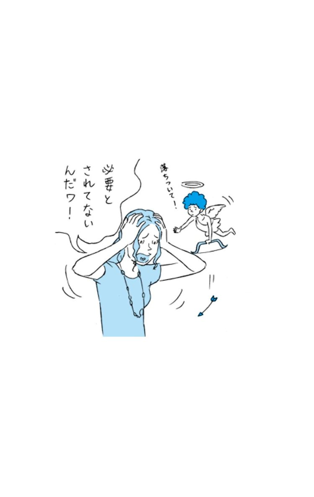
Lesson of the
OTONA-GOKORO
40
オトナ心のご提案
♥自分が得意だったことを思い出す
子供の頃、どんなことが得意だったか卒業アルバムを見たり家族と話したりして思い出してみませんか？
自分のことを認めてあげられるようになるためにも、思い出探しをしてみましょう。
♥一人時間を楽しむ
ちょっとずつでいいので、携帯を手放して一人で過ごす時間を増やすようにしてみませんか？
常に誰かとつながろうとするのはやめて、一人でも楽しめるようになることで、穏やかな恋愛ができるようになります。
おわりに
最後までお読みいただき、ありがとうございました。この本では、多くの女性が抱えている悩みについてフォーカスしてお話しをさせていただきました。
何かひとつでも「やってみようかな」と思っていただけたなら、本当に嬉しいです。
この本を書かせていただくことになった時、伝えたいと思ったことが２つあります。それは、
① 感情を整理することで、人生が楽になること
② 小さな行動で、人生を変えることができること
私はずっと、どうしてこんなに毎日がジェットコースターのように激しくて、生きるのが大変なのだろうと思って生きてきました。自分のことなのに、自分が一番わかっていなくて、なんだかつらいなぁと。
楽しそうに毎日を過ごしている人や、真っ直ぐに目標に向かって突き進んでいる人、穏やかで充実した生活を送っている人を見ると、みんなすごいなあ、羨ましいなあと思いながらも、どうしたらあんな風になれるんだろうと疑問でした。
そして、感情に振り回されてばかりの自分が嫌になって、日々、落ち込んでいました。
10代、20代の頃は、仕事でも恋愛でも、いつも同じパターンでつまずいてしまうことがしょっちゅう。
自分の感情を人にぶつけてしまって、一人になるとくよくよ落ち込むこともあって、人付き合いも本当に下手だったなあと思います。
今となっては、そんな失敗もいい経験だったと思えるようになりました。
失敗したり苦しい思いをしている時って、心がかなりのダメージを受けるものです。
それを見ないふりして放っておくと、心に深い傷が残ってしまって、ずっと痛みを引きずることを実感してきました。
でも、社会で生きている以上、どうしても落ち込んだり、イラッとしてしまうようなできごとはありますし、それをなくすことはできません。
けれど、そこで生まれたマイナス感情を、いったん鎮めたり、違う見方をすることで、いつまでも苦しい思いを抱えてしまうのを防ぐことはできます。
自分自身の感情とは、一生付き合っていくもの。
だからこそ、感情をコントロールする方法を身につけておくと、心を深く傷つけることが少なくなったり、人とぶつかることが減ったり、感情のマイナススパイラルに陥ることがなくなるのです。
自分の感情を整理できれば、人生はとても生きやすくなる、ということを、ぜひ本書で知っていただきたいと思っています。
そして、もうひとつ。
少しの行動で、人生を大きく変えるということを意識して、ぜひ、その一歩を踏み出してみてください。
現在、私はキャリアカウンセラーとして、多くの方の相談に乗り、研修・講演では、キャリアや人生をどう創りあげるかといったお話させていただいています。
今でこそ人前に立って話すことができるようになりましたが、元々は引っ込み思案で、緊張してすぐに声が震えてしまうような性格でした。きっと昔の自分からは、今の自分なんて到底想像ができなかったと思います。
どうして今の自分になれたのか。
それは、日々、ほんの少しの変化と行動を続けてきたからだと思います。
例えば、いつも遅刻ギリギリに会社に着くのを変えるために、朝、少し早く会社に着くようにしてみようといった、一人でこっそり始めたことだったり、友達から、やってみない？と誘われた司会進行を、思い切ってやってみたことだったり、あまり話したことのない人に、自分から話しかけてみることだったり。
それまでの自分だったら避けていたこと、やろうとしていなかったことを、ほんのちょっと勇気を出してやってみると、失敗をしながらも徐々にできることが増えていって、予想もしなかった道が拓けるようになるのだと思います。
少しの行動で、人生は劇的に変わります。
その大きな転機を迎えた時に、あなたが感情的にならずに、心を整理することができていたら、どの道を選ぶかを冷静に判断でき、感情だけで選んで後悔する、という失敗がなくなります。
「日々の心を整理すること」
「ちょっとした行動を起こすこと」
１日の中で、できる範囲でこの２つを取り入れていくことで、穏やかで充実した自分らしい人生を選択することができるようになるので、ぜひ実感してみてください。
そのためにも、人と関わることを恐れずに、周りの人からの言葉を素直に受け入れるようにしてください。人と関わることで、傷つくこともたくさんあります。けれど、その一方で、その傷を癒してくれるのもまた、人であったりするのです。
どうしても自分だけでは同じところをグルグル回ってしまう、なかなか感情をリセットできなくて苦しい時、誰かの一言でふっと心が楽になったり、新しい方法が見つかったりするものです。
心を整理することができるようになるためには、一人で悩みのすべてを抱え込まないようにすることが大切です。
本書を執筆するにあたっても、何度も壁にぶつかって、行き詰ったことがたくさんありました。
そんな時は、場所を変えてみたり、違うことに没頭してみたりと、自分で変化をつけるようにしていましたが、なによりも、よし頑張ろう、と感情を切り替えることができたのは、支えてくださった人からの言葉でした。
クロスメディア・パブリッシング編集者の矢作千春さんは、私が行き詰ると何時間でも付き合ってくださって、その度に、私はいつも元気になって、また気持ちを切り替えて向き合うことができるようになりました。的確で温かいメールの言葉に、何度も助けていただきました。そして、同社社長の小早川さまをはじめ、この本を作り出してくださった、すべての皆様に心から深く感謝いたします。
今の私があるのは、今まで出会ってきたすべての人たちのお陰です。一人一人の方に、心からありがとうございますと伝えたいです。
そして今も、大切な人達に支えてもらっているからこそ立っていることができること、いつも前に進むことを応援してくれることに、心から感謝しています。
最後に、この本を手に取り、読んでくださった皆さま、本当にありがとうございました。
心の中を整理して、少し気持ちに余裕ができたら、新しい行動を起こしてみてください。
そして、ますます幸せで穏やかな、あなたらしい人生が送れることを、心から願っています。
平成２５年５月吉日 水野 順子
【著者略歴】
水野順子（みずの・じゅんこ）
キャリアカウンセラー CareerCollection代表
大学卒業後、公務員として様々な相談業務に携わる中で、仕事と生きることのつながりを強く実感。キャリア支援の専門家を目指して、人材総合サービスの企業へ転身し、営業・キャリアコンサルタントとして実績を積んだ後、「キャリアというフェーズから生きることを支援したい」との思いで独立。「どんな経験も無駄なことは何一つない」をモットーに、15,000人を超える女性へのキャリアカウンセリングや60,000人以上への講演・研修を担当する。女性向けキャリアコラムの執筆や、ビジネスメンタルケアやキャリアデザイン研修・講演など幅広く活動中。
【主な資格】
米国CCE認定 GCDF-Japanキャリアカウンセラー
2級キャリア・コンサルティング技能士
産業カウンセラー
ビジネスメンタルトレーナー
３分で感情をリセットする心の整理手帳
著者 水野順子
平成28年5月1日 発行
(C) Junko Mizuno 2013
本電子書籍は下記にもとづいて制作しました
『３分で感情をリセットする心の整理手帳』
平成25年6月11日初版発行
発行者 小早川 幸一郎
発 行 株式会社クロスメディア・パブリッシング
〒151-0051 東京都渋谷区千駄ヶ谷4-20-3 東栄神宮外苑ビル
http://www.cm-publishing.co.jp
TEL (03)5413-3140
FAX (03)5413-3141
発 売 株式会社インプレス
〒101-0051 東京都千代田区神田神保町一丁目105番地
カバーデザイン 上坊菜々子